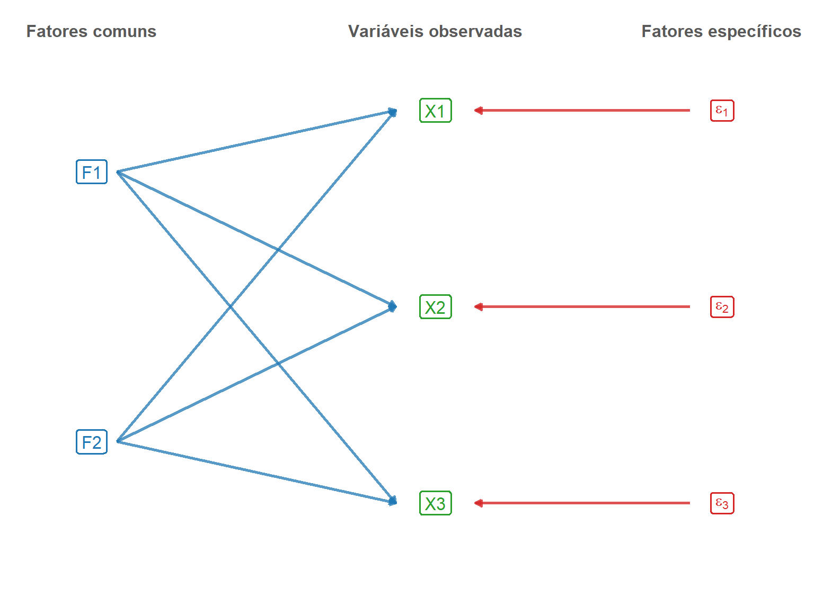
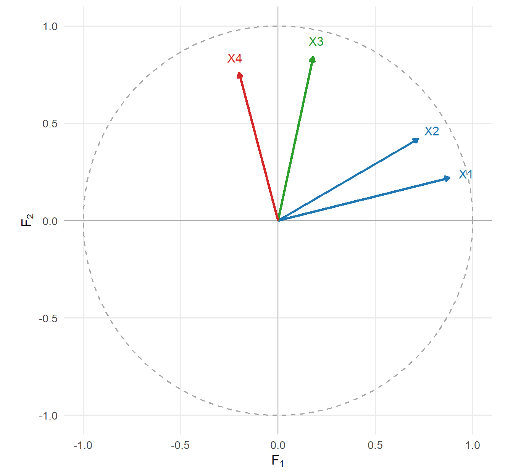
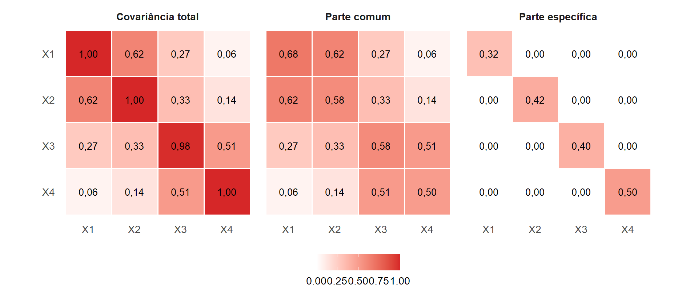
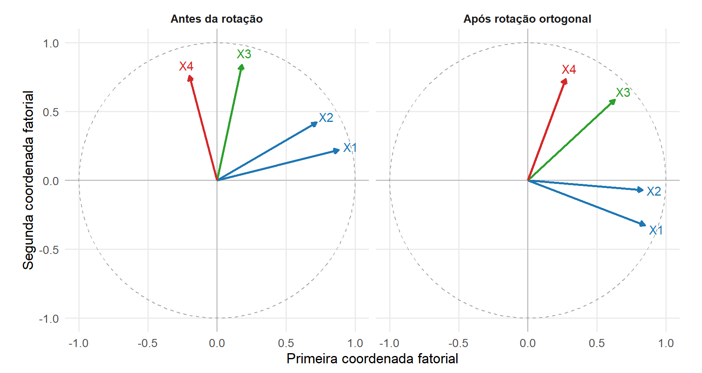

15 Formulação da Análise Fatorial
A Análise Fatorial representa a estrutura de covariâncias entre variáveis observadas por meio de um número menor de variáveis latentes, denominadas fatores comuns. No modelo ortogonal, as covariâncias entre variáveis distintas são atribuídas aos fatores comuns, enquanto a variância de cada variável é decomposta em uma parcela comum e uma parcela específica (Johnson; Wichern, 2007).
Diferentemente da ACP formulada no Capítulo 14, que constrói combinações lineares para representar a variabilidade total, a Análise Fatorial especifica um modelo para a estrutura de covariâncias. No modelo ortogonal,
\[ \boldsymbol{\Sigma} = \boldsymbol{\Phi} \boldsymbol{\Phi}^{\top} + \boldsymbol{\Psi}, \]
em que \(\boldsymbol{\Phi}\boldsymbol{\Phi}^{\top}\) representa a parcela comum da covariância e \(\boldsymbol{\Psi}\) representa a variabilidade específica.
A formulação utiliza a matriz de covariâncias populacional definida na Definição 8.2, a noção de posto na Definição 2.14 e, no aprofundamento probabilístico, a distribuição normal multivariada da Definição 9.1. O núcleo desenvolve o modelo de fatores comuns, as cargas, as comunalidades, a identificação em visão conceitual, a rotação, as formulações populacional e amostral, os escores fatoriais, os pressupostos e a distinção em relação à ACP. Os aprofundamentos tratam da identificação formal, da formulação normal e das decisões metodológicas associadas à Análise Fatorial Exploratória.
Neste capítulo, a matriz de cargas fatoriais será denotada por \(\boldsymbol{\Phi}=(\phi_{ij})\), seguindo a notação adotada por Artes e Barroso (Artes; Barroso, 2023).
15.1 O problema da estrutura latente
Considere o vetor aleatório
\[ \boldsymbol{\mathsf X} = \begin{pmatrix} X_1\\ \vdots\\ X_p \end{pmatrix} \in \mathbb R^p, \]
com segundos momentos finitos, vetor de médias
\[ \boldsymbol{\mu} = E \left( \boldsymbol{\mathsf X} \right) \]
e matriz de covariâncias populacional \(\boldsymbol{\Sigma}\), definida na Definição 8.2.
Os elementos fora da diagonal de \(\boldsymbol{\Sigma}\) registram as covariâncias entre pares de variáveis e, portanto, sua associação linear. Na Análise Fatorial, essa estrutura é representada a partir de uma hipótese: parte das covariâncias entre as variáveis observadas é atribuída à influência conjunta de um número menor de fatores não diretamente observados.
Considere
\[ \boldsymbol{\mathsf F} = \begin{pmatrix} F_1\\ \vdots\\ F_m \end{pmatrix} \in \mathbb R^m, \]
com
\[ 1 \leq m < p \]
na formulação de baixa dimensão adotada neste capítulo.
As componentes de \(\boldsymbol{\mathsf F}\) são variáveis aleatórias latentes. Elas não correspondem a colunas observadas da matriz de dados. Sua existência é postulada pelo modelo para representar a estrutura de covariâncias entre as variáveis observadas.
A Análise Fatorial utiliza uma representação de menor dimensão diferente daquela construída pela ACP. As variáveis observadas são modeladas por fatores latentes comuns e por parcelas específicas.
Os fatores comuns representam a parcela compartilhada da estrutura de covariâncias. Os fatores específicos representam a variabilidade de cada variável que não é atribuída aos fatores comuns. As condições que definem essa decomposição serão estabelecidas no modelo ortogonal.
15.2 Formulação do modelo de fatores comuns
O modelo básico representa o vetor observado como a soma de três parcelas:
- localização média;
- contribuição dos fatores comuns;
- contribuição específica.
Definição 15.1 (Modelo de fatores comuns) Considere um vetor aleatório
\[ \boldsymbol{\mathsf X} \in \mathbb R^p \]
com segundos momentos finitos e vetor de médias
\[ \boldsymbol{\mu} = E \left( \boldsymbol{\mathsf X} \right). \]
Sejam
\[ \boldsymbol{\mathsf F} \in \mathbb R^m \]
um vetor aleatório de fatores comuns e
\[ \boldsymbol{\varepsilon} \in \mathbb R^p \]
um vetor aleatório de fatores específicos, ambos com segundos momentos finitos e satisfazendo
\[ E \left( \boldsymbol{\mathsf F} \right) = \mathbf0 \]
e
\[ E \left( \boldsymbol{\varepsilon} \right) = \mathbf0. \]
O modelo de fatores comuns é
\[ \boldsymbol{\mathsf X} = \boldsymbol{\mu} + \boldsymbol{\Phi} \boldsymbol{\mathsf F} + \boldsymbol{\varepsilon}, \tag{15.1}\]
em que
\[ \boldsymbol{\Phi} \in \mathbb R^{p\times m} \]
é a matriz de cargas fatoriais.
Os elementos do modelo são organizados na Tabela 15.1.
| Objeto | Dimensão | Função no modelo |
|---|---|---|
| \(\boldsymbol{\mathsf X}\) | \(p\times1\) | Vetor de variáveis observadas |
| \(\boldsymbol{\mu}\) | \(p\times1\) | Vetor de médias |
| \(\boldsymbol{\mathsf F}\) | \(m\times1\) | Vetor de fatores comuns latentes |
| \(\boldsymbol{\Phi}\) | \(p\times m\) | Matriz de cargas fatoriais |
| \(\boldsymbol{\varepsilon}\) | \(p\times1\) | Vetor de fatores específicos |
| \(\boldsymbol{\Psi}\) | \(p\times p\) | Matriz de covariâncias dos fatores específicos no modelo ortogonal |
A \(i\)-ésima variável pode ser escrita como
\[ X_i = \mu_i + \phi_{i1}F_1 + \phi_{i2}F_2 + \cdots + \phi_{im}F_m + \varepsilon_i. \tag{15.2}\]
A linha \(i\) da matriz de cargas será denotada por
\[ \boldsymbol{\phi}_i^\top = \begin{pmatrix} \phi_{i1} & \cdots & \phi_{im} \end{pmatrix}. \]
A coluna \(j\) será denotada por
\[ \boldsymbol{\phi}_{\cdot j} = \begin{pmatrix} \phi_{1j}\\ \vdots\\ \phi_{pj} \end{pmatrix} \in \mathbb R^p. \]
Assim,
\[ X_i-\mu_i = \boldsymbol{\phi}_i^\top \boldsymbol{\mathsf F} + \varepsilon_i. \]
A carga \(\phi_{ij}\) representa o coeficiente associado ao fator \(F_j\) na expressão linear da variável \(X_i\). Sua interpretação depende da escala dos fatores, da escala das variáveis e da parametrização utilizada.
A Figura 15.1 representa a estrutura de um modelo com dois fatores e três variáveis observadas. As setas azuis representam as contribuições dos fatores comuns e as setas vermelhas representam os fatores específicos.
A figura mostra a estrutura linear postulada pelo modelo. Sob as hipóteses do modelo ortogonal estabelecidas a seguir, as covariâncias entre variáveis distintas são atribuídas à parcela comum, enquanto os fatores específicos não acrescentam covariâncias entre variáveis distintas.
15.3 Hipóteses do modelo ortogonal
A expressão na Equação 15.1 ainda não determina a estrutura de covariâncias. Para isso, são estabelecidas condições sobre os fatores comuns e os fatores específicos.
Na parametrização ortogonal adotada neste capítulo, os fatores comuns são centralizados, possuem variância unitária e são mutuamente não correlacionados:
\[ E \left( \boldsymbol{\mathsf F} \right) = \mathbf0 \]
e
\[ \operatorname{Cov} \left( \boldsymbol{\mathsf F} \right) = \mathbf I_m. \]
Os fatores específicos satisfazem
\[ E \left( \boldsymbol{\varepsilon} \right) = \mathbf0 \]
e
\[ \operatorname{Cov} \left( \boldsymbol{\varepsilon} \right) = \boldsymbol{\Psi}, \]
com
\[ \boldsymbol{\Psi} = \operatorname{diag} \left( \psi_1,\ldots,\psi_p \right), \qquad \psi_i \geq 0. \]
Além disso,
\[ \operatorname{Cov} \left( \boldsymbol{\mathsf F}, \boldsymbol{\varepsilon} \right) = \mathbf0. \]
Essas condições são reunidas na definição a seguir.
Definição 15.2 (Modelo fatorial ortogonal) Considere o modelo de fatores comuns da Definição 15.1, com
\[ E \left( \boldsymbol{\mathsf F} \right) = \mathbf0 \]
e
\[ E \left( \boldsymbol{\varepsilon} \right) = \mathbf0. \]
O modelo é denominado fatorial ortogonal quando
\[ \operatorname{Cov} \left( \boldsymbol{\mathsf F} \right) = \mathbf I_m, \]
\[ \operatorname{Cov} \left( \boldsymbol{\varepsilon} \right) = \boldsymbol{\Psi} = \operatorname{diag} \left( \psi_1,\ldots,\psi_p \right), \qquad \psi_i \geq 0, \]
e
\[ \operatorname{Cov} \left( \boldsymbol{\mathsf F}, \boldsymbol{\varepsilon} \right) = \mathbf0. \]
A condição
\[ \operatorname{Cov} \left( \boldsymbol{\mathsf F} \right) = \mathbf I_m \]
fixa a escala dos fatores, atribui variância unitária a cada fator e estabelece covariâncias nulas entre fatores distintos. A ortogonalidade, nesse contexto, refere-se à estrutura de covariâncias dos fatores.
Essa padronização se refere aos fatores latentes e não implica que as variáveis observadas tenham variância unitária. A padronização das variáveis observadas ocorre quando o modelo é formulado a partir da matriz de correlações.
A diagonalidade de \(\boldsymbol{\Psi}\) estabelece
\[ \operatorname{Cov} \left( \varepsilon_i,\varepsilon_j \right) = 0, \qquad \forall i\neq j. \]
Consequentemente, a parcela específica do modelo não acrescenta covariância entre variáveis distintas.
A diagonalidade de \(\boldsymbol{\Psi}\) estabelece não correlação entre fatores específicos distintos, mas não implica sua independência sem hipóteses probabilísticas adicionais. No modelo fatorial normal da Definição 15.7, a normalidade conjunta de \(\boldsymbol{\varepsilon}\), combinada com a diagonalidade de \(\boldsymbol{\Psi}\), permite concluir pela independência de seus componentes utilizando a Proposição 9.6.
A condição
\[ \operatorname{Cov} \left( \boldsymbol{\mathsf F}, \boldsymbol{\varepsilon} \right) = \mathbf0 \]
separa, em termos de covariância, a parcela comum da parcela específica.
Essas hipóteses são suficientes para obter a estrutura de segunda ordem do modelo fatorial ortogonal. A normalidade multivariada não é necessária para essa formulação. Seu papel é retomado na seção sobre pressupostos e desenvolvido na Seção 15.16.3.
15.4 Estrutura da matriz de covariâncias
De Equação 15.1,
\[ \boldsymbol{\mathsf X} - \boldsymbol{\mu} = \boldsymbol{\Phi} \boldsymbol{\mathsf F} + \boldsymbol{\varepsilon}. \]
Pelas condições de média do modelo,
\[ E \left( \boldsymbol{\mathsf X} \right) = \boldsymbol{\mu}. \]
Para a matriz de covariâncias,
\[ \begin{aligned} \operatorname{Cov} \left( \boldsymbol{\mathsf X} \right) &= \operatorname{Cov} \left( \boldsymbol{\Phi} \boldsymbol{\mathsf F} + \boldsymbol{\varepsilon} \right)\\ &= \boldsymbol{\Phi} \operatorname{Cov} \left( \boldsymbol{\mathsf F} \right) \boldsymbol{\Phi}^{\top} + \operatorname{Cov} \left( \boldsymbol{\varepsilon} \right)\\ &\quad+ \boldsymbol{\Phi} \operatorname{Cov} \left( \boldsymbol{\mathsf F}, \boldsymbol{\varepsilon} \right) + \operatorname{Cov} \left( \boldsymbol{\varepsilon}, \boldsymbol{\mathsf F} \right) \boldsymbol{\Phi}^{\top}. \end{aligned} \]
A regra de transformação da covariância utilizada nessa expressão foi estabelecida na Proposição 8.6.
Pelas hipóteses do modelo fatorial ortogonal,
\[ \operatorname{Cov} \left( \boldsymbol{\mathsf F} \right) = \mathbf I_m, \]
\[ \operatorname{Cov} \left( \boldsymbol{\varepsilon} \right) = \boldsymbol{\Psi} \]
e
\[ \operatorname{Cov} \left( \boldsymbol{\mathsf F}, \boldsymbol{\varepsilon} \right) = \mathbf0. \]
Portanto,
\[ \boldsymbol{\Sigma} = \boldsymbol{\Phi} \boldsymbol{\Phi}^{\top} + \boldsymbol{\Psi}. \tag{15.3}\]
Proposição 15.1 (Estrutura de covariâncias do modelo fatorial ortogonal) Sob as hipóteses na Definição 15.2, a matriz de covariâncias de \(\boldsymbol{\mathsf X}\) é
\[ \boldsymbol{\Sigma} = \boldsymbol{\Phi} \boldsymbol{\Phi}^{\top} + \boldsymbol{\Psi}, \]
em que
\[ \boldsymbol{\Phi} \boldsymbol{\Phi}^{\top} \succeq \mathbf0 \]
e
\[ \boldsymbol{\Psi} = \operatorname{diag} \left( \psi_1,\ldots,\psi_p \right) \succeq \mathbf0. \]
A expressão na Equação 15.3 é o núcleo matemático da Análise Fatorial.
A matriz
\[ \boldsymbol{\Phi} \boldsymbol{\Phi}^{\top} \]
é a matriz de covariâncias da parcela comum do modelo. Como
\[ \boldsymbol{\Phi} \in \mathbb R^{p\times m}, \]
tem-se
\[ \operatorname{posto} \left( \boldsymbol{\Phi} \boldsymbol{\Phi}^{\top} \right) \leq m. \]
Assim, a estrutura comum é representada por uma matriz semidefinida positiva cujo posto é limitado pelo número de fatores.
A matriz
\[ \boldsymbol{\Psi} = \operatorname{diag} \left( \psi_1,\ldots,\psi_p \right) \]
contém as variâncias específicas.
A decomposição
\[ \boldsymbol{\Sigma} = \underbrace{ \boldsymbol{\Phi} \boldsymbol{\Phi}^{\top} }_{\text{estrutura comum}} + \underbrace{ \boldsymbol{\Psi} }_{\text{estrutura específica}} \]
explicita a diferença em relação à ACP. A Análise Fatorial não procura uma decomposição espectral completa de \(\boldsymbol{\Sigma}\). Ela procura representar a matriz de covariâncias por uma estrutura comum de posto reduzido acrescida de uma matriz diagonal de variâncias específicas.
15.4.1 Covariâncias entre variáveis
Considere duas variáveis distintas \(X_i\) e \(X_j\). Pelo modelo,
\[ X_i-\mu_i = \boldsymbol{\phi}_i^\top \boldsymbol{\mathsf F} + \varepsilon_i \]
e
\[ X_j-\mu_j = \boldsymbol{\phi}_j^\top \boldsymbol{\mathsf F} + \varepsilon_j. \]
Sob as hipóteses do modelo fatorial ortogonal,
\[ \operatorname{Cov} \left( X_i,X_j \right) = \boldsymbol{\phi}_i^\top \boldsymbol{\phi}_j, \qquad i\neq j. \]
Equivalentemente,
\[ \sigma_{ij} = \sum_{h=1}^m \phi_{ih} \phi_{jh}, \qquad i\neq j. \tag{15.4}\]
A covariância entre duas variáveis observadas é, portanto, reproduzida pelo produto interno entre seus vetores de cargas.
Esse resultado admite uma interpretação geométrica. As linhas de \(\boldsymbol{\Phi}\) podem ser vistas como vetores em \(\mathbb R^m\). Variáveis cujos vetores de cargas apresentam grande produto interno positivo possuem covariância positiva segundo o modelo; vetores com produto interno negativo correspondem a covariância negativa; e vetores ortogonais correspondem a covariância nula entre as variáveis no modelo fatorial ortogonal.
Essa geometria será representada mais adiante por meio dos vetores de cargas.
15.4.2 Variâncias das variáveis
Para uma variável \(X_i\),
\[ \begin{aligned} \operatorname{Var} \left( X_i \right) &= \operatorname{Var} \left( \boldsymbol{\phi}_i^\top \boldsymbol{\mathsf F} + \varepsilon_i \right)\\ &= \boldsymbol{\phi}_i^\top \boldsymbol{\phi}_i + \psi_i. \end{aligned} \]
Portanto,
\[ \sigma_{ii} = \sum_{h=1}^m \phi_{ih}^2 + \psi_i. \tag{15.5}\]
A variância de cada variável é decomposta em uma parcela comum e uma parcela específica.
15.5 Comunalidades e especificidades
A decomposição da Equação 15.5 permite definir duas quantidades próprias da Análise Fatorial.
Definição 15.3 (Comunalidade) No modelo fatorial ortogonal na Definição 15.2, a comunalidade da variável \(X_i\) é
\[ h_i^2 = \boldsymbol{\phi}_i^\top \boldsymbol{\phi}_i = \sum_{h=1}^m \phi_{ih}^2. \tag{15.6}\]
A comunalidade é a quantidade da variância de \(X_i\) atribuída à parcela comum do modelo.
Definição 15.4 (Especificidade) No modelo fatorial ortogonal na Definição 15.2, a especificidade da variável \(X_i\) é
\[ \psi_i = \operatorname{Var} \left( \varepsilon_i \right), \qquad \psi_i \geq 0. \]
Assim,
\[ \operatorname{Var} \left( X_i \right) = h_i^2 + \psi_i. \tag{15.7}\]
A comunalidade e a especificidade pertencem à decomposição da variância de cada variável. Elas não correspondem à decomposição da variância total em componentes sucessivamente ordenadas, como ocorre na ACP.
Quando as variáveis estão padronizadas,
\[ \operatorname{Var} \left( X_i \right) = 1, \]
e, portanto,
\[ 1 = h_i^2 + \psi_i. \tag{15.8}\]
Nesse caso,
\[ 0 \leq h_i^2 \leq 1 \]
e
\[ 0 \leq \psi_i \leq 1. \]
Como a variância total da variável padronizada é igual a \(1\), a comunalidade \(h_i^2\) também pode ser interpretada como a proporção de sua variância atribuída aos fatores comuns, enquanto \(\psi_i\) é a proporção atribuída ao fator específico.
A soma das comunalidades pode ser escrita como
\[ \sum_{i=1}^p h_i^2 = \operatorname{tr} \left( \boldsymbol{\Phi} \boldsymbol{\Phi}^{\top} \right). \]
Como
\[ \operatorname{tr} \left( \boldsymbol{\Sigma} \right) = \operatorname{tr} \left( \boldsymbol{\Phi} \boldsymbol{\Phi}^{\top} \right) + \operatorname{tr} \left( \boldsymbol{\Psi} \right), \]
a variância total também admite a decomposição
\[ \operatorname{tr} \left( \boldsymbol{\Sigma} \right) = \sum_{i=1}^p h_i^2 + \sum_{i=1}^p \psi_i. \tag{15.9}\]
A interpretação dessa identidade difere daquela utilizada na ACP. Na ACP, os autovalores distribuem a variância total entre componentes principais. Na Análise Fatorial, a identidade separa a variabilidade atribuída à estrutura comum da variabilidade específica das variáveis.
Exemplo 15.1 (Modelo com um fator comum) Considere três variáveis padronizadas e centralizadas representadas por um único fator comum,
\[ \boldsymbol{\mathsf X} = \boldsymbol{\Phi} F + \boldsymbol{\varepsilon}, \]
com
\[ \boldsymbol{\Phi} = \begin{pmatrix} 0{,}80\\ 0{,}70\\ 0{,}60 \end{pmatrix} \]
e
\[ \boldsymbol{\Psi} = \begin{pmatrix} 0{,}36 & 0 & 0\\ 0 & 0{,}51 & 0\\ 0 & 0 & 0{,}64 \end{pmatrix}. \]
As comunalidades são
\[ h_1^2 = 0{,}80^2 = 0{,}64, \]
\[ h_2^2 = 0{,}70^2 = 0{,}49 \]
e
\[ h_3^2 = 0{,}60^2 = 0{,}36. \]
Como as variáveis são padronizadas,
\[ h_i^2+\psi_i=1 \]
para cada variável.
A matriz de covariâncias comuns é
\[ \boldsymbol{\Phi} \boldsymbol{\Phi}^{\top} = \begin{pmatrix} 0{,}64 & 0{,}56 & 0{,}48\\ 0{,}56 & 0{,}49 & 0{,}42\\ 0{,}48 & 0{,}42 & 0{,}36 \end{pmatrix}. \]
Somando as variâncias específicas,
\[ \boldsymbol{\mathcal R} = \boldsymbol{\Phi} \boldsymbol{\Phi}^{\top} + \boldsymbol{\Psi} = \begin{pmatrix} 1 & 0{,}56 & 0{,}48\\ 0{,}56 & 1 & 0{,}42\\ 0{,}48 & 0{,}42 & 1 \end{pmatrix}. \]
As correlações entre variáveis distintas são reproduzidas pelo fator comum. Por exemplo,
\[ \operatorname{Corr} \left( X_1,X_2 \right) = 0{,}80\times0{,}70 = 0{,}56. \]
A primeira variável apresenta comunalidade \(0{,}64\), de modo que \(64\%\) de sua variância padronizada é atribuída ao fator comum e \(36\%\) é atribuída ao fator específico. Para a terceira variável, essas parcelas são \(36\%\) e \(64\%\), respectivamente.
O exemplo mostra que a Análise Fatorial procura representar simultaneamente as covariâncias entre as variáveis e a decomposição de suas variâncias em parcelas comum e específica.
15.6 Cargas fatoriais e associação com os fatores
A matriz \(\boldsymbol{\Phi}\) reúne as cargas fatoriais do modelo. Seus elementos aparecem tanto na representação das variáveis quanto na matriz de covariâncias reproduzida.
No modelo ortogonal,
\[ \operatorname{Cov} \left( \boldsymbol{\mathsf X}, \boldsymbol{\mathsf F} \right) = \operatorname{Cov} \left( \boldsymbol{\Phi} \boldsymbol{\mathsf F} + \boldsymbol{\varepsilon}, \boldsymbol{\mathsf F} \right). \]
Como
\[ \operatorname{Cov} \left( \boldsymbol{\mathsf F} \right) = \mathbf I_m \]
e
\[ \operatorname{Cov} \left( \boldsymbol{\varepsilon}, \boldsymbol{\mathsf F} \right) = \mathbf0, \]
segue que
\[ \operatorname{Cov} \left( \boldsymbol{\mathsf X}, \boldsymbol{\mathsf F} \right) = \boldsymbol{\Phi}. \tag{15.10}\]
Portanto,
\[ \operatorname{Cov} \left( X_i,F_j \right) = \phi_{ij}. \]
Essa igualdade decorre da parametrização em que os fatores possuem variância unitária.
A carga fatorial coincide com a correlação entre \(X_i\) e \(F_j\) somente quando a variável observada também possui variância unitária. De forma geral, se \(\sigma_{ii}>0\),
\[ \operatorname{Corr} \left( X_i,F_j \right) = \frac{ \phi_{ij} }{ \sqrt{\sigma_{ii}} }. \tag{15.11}\]
Para variáveis padronizadas,
\[ \sigma_{ii}=1, \]
e então
\[ \operatorname{Corr} \left( X_i,F_j \right) = \phi_{ij}. \]
Essa distinção é semelhante àquela estabelecida na Seção 14.14.2 entre os coeficientes das componentes principais e as correlações das variáveis com as componentes. Na Análise Fatorial, as cargas são parâmetros do próprio modelo de covariâncias.
A formulação construída até este ponto mostra que o problema da estrutura latente pode ser expresso por
\[ \boldsymbol{\Sigma} = \boldsymbol{\Phi} \boldsymbol{\Phi}^{\top} + \boldsymbol{\Psi}. \]
O passo seguinte consiste em analisar a geometria da matriz de cargas e uma propriedade que distingue a Análise Fatorial da ACP: diferentes matrizes de cargas podem produzir exatamente a mesma estrutura de covariâncias comuns. Essa indeterminação conduz ao problema de identificação e às rotações fatoriais.
15.7 Geometria das cargas fatoriais
No modelo ortogonal, cada linha da matriz de cargas
\[ \boldsymbol{\phi}_i^\top = \begin{pmatrix} \phi_{i1} & \cdots & \phi_{im} \end{pmatrix} \]
pode ser representada como um vetor em \(\mathbb R^m\).
A interpretação geométrica reúne a expressão da comunalidade na Equação 15.6 e a expressão da covariância entre variáveis distintas na Equação 15.4:
\[ h_i^2 = \boldsymbol{\phi}_i^\top \boldsymbol{\phi}_i = \left\| \boldsymbol{\phi}_i \right\|^2 \]
e, para \(i\neq j\),
\[ \sigma_{ij} = \boldsymbol{\phi}_i^\top \boldsymbol{\phi}_j. \]
Portanto, o comprimento do vetor de cargas da variável \(X_i\) determina sua comunalidade, enquanto o produto interno entre os vetores de cargas de duas variáveis determina a covariância comum reproduzida entre elas.
Aplicando a relação entre produto interno e ângulo definida em Definição 1.11, para \(\boldsymbol{\phi}_i\neq\mathbf 0\) e \(\boldsymbol{\phi}_j\neq\mathbf 0\),
\[ \sigma_{ij} = \boldsymbol{\phi}_i^\top \boldsymbol{\phi}_j = \left\| \boldsymbol{\phi}_i \right\| \left\| \boldsymbol{\phi}_j \right\| \cos \left( \theta_{ij} \right), \]
em que \(\theta_{ij}\in[0,\pi]\) é o ângulo entre os vetores de cargas \(\boldsymbol{\phi}_i\) e \(\boldsymbol{\phi}_j\). Assim, a covariância comum depende simultaneamente dos comprimentos dos vetores e de sua orientação relativa.
Vetores próximos em direção produzem produto interno positivo. Vetores orientados em sentidos aproximadamente opostos produzem produto interno negativo. Vetores aproximadamente ortogonais produzem pequena covariância comum.
A Figura 15.2 representa quatro variáveis em um modelo com dois fatores. O comprimento de cada vetor está associado à comunalidade e sua orientação descreve a relação da variável com os fatores.

Os vetores de \(X_1\) e \(X_2\) apresentam orientações semelhantes e, portanto, produto interno positivo. A variável \(X_3\) está mais associada à segunda direção fatorial. A posição de \(X_4\) mostra que uma variável pode apresentar sinais diferentes de associação com os dois fatores.
O círculo unitário fornece uma referência geométrica para variáveis padronizadas. Nesse caso,
\[ h_i^2 \leq 1, \]
de modo que os vetores de cargas permanecem no interior ou sobre a circunferência.
Essa representação não transforma os fatores em variáveis observadas. Ela representa os parâmetros que relacionam cada variável observada às dimensões latentes especificadas pelo modelo.
15.8 Estrutura comum de covariâncias
A estrutura fatorial comum pode ser isolada pela diferença entre a matriz total de covariâncias e a matriz de variâncias específicas.
Defina
\[ \boldsymbol{\Sigma}_{\mathrm{com}} = \boldsymbol{\Sigma} - \boldsymbol{\Psi}. \]
Pela Equação 15.3,
\[ \boldsymbol{\Sigma}_{\mathrm{com}} = \boldsymbol{\Phi} \boldsymbol{\Phi}^{\top}. \tag{15.12}\]
Definição 15.5 (Matriz de covariâncias comuns) No modelo fatorial ortogonal na Definição 15.2, a matriz de covariâncias comuns é
\[ \boldsymbol{\Sigma}_{\mathrm{com}} = \boldsymbol{\Phi} \boldsymbol{\Phi}^{\top}. \]
Seus elementos diagonais são as comunalidades e seus elementos fora da diagonal são as covariâncias reproduzidas pelos fatores comuns.
A diagonal de \(\boldsymbol{\Sigma}_{\mathrm{com}}\) é
\[ \operatorname{diag} \left( \boldsymbol{\Sigma}_{\mathrm{com}} \right) = \begin{pmatrix} h_1^2\\ \vdots\\ h_p^2 \end{pmatrix}, \]
enquanto, para \(i\neq j\),
\[ \left( \boldsymbol{\Sigma}_{\mathrm{com}} \right)_{ij} = \sigma_{ij}. \]
Na formulação populacional exata do modelo básico, toda covariância entre variáveis distintas é atribuída aos fatores comuns. As variâncias possuem uma parcela adicional representada por \(\boldsymbol{\Psi}\).
Quando as variáveis são padronizadas,
\[ \boldsymbol{\Sigma} = \boldsymbol{\mathcal R}, \]
e a matriz comum possui diagonal formada pelas comunalidades:
\[ \boldsymbol{\mathcal R}_{\mathrm{com}} = \boldsymbol{\mathcal R} - \boldsymbol{\Psi}. \]
Como \(\boldsymbol{\Psi}\) é diagonal, \(\boldsymbol{\mathcal R}_{\mathrm{com}}\) e \(\boldsymbol{\mathcal R}\) possuem os mesmos elementos fora da diagonal. A diferença ocorre na diagonal: os valores unitários de \(\boldsymbol{\mathcal R}\) são substituídos pelas comunalidades \(h_i^2\) na matriz comum.
A dimensão da estrutura comum é limitada pelo número de fatores. Como
\[ \operatorname{posto} \left( \boldsymbol{\Phi} \boldsymbol{\Phi}^{\top} \right) \leq m, \]
a Análise Fatorial procura representar uma matriz de covariâncias de dimensão \(p\) por uma estrutura comum cujo posto é, no máximo, \(m<p\).
Essa redução de posto pertence apenas à parcela comum. A matriz total
\[ \boldsymbol{\Sigma} = \boldsymbol{\Sigma}_{\mathrm{com}} + \boldsymbol{\Psi} \]
pode continuar apresentando posto completo porque as variâncias específicas acrescentam variabilidade nas direções das variáveis observadas.
Esse ponto distingue novamente a Análise Fatorial da aproximação de posto reduzido utilizada na ACP. Uma aproximação espectral truncada de \(\boldsymbol{\Sigma}\) produz diretamente uma matriz de posto reduzido. O modelo fatorial acrescenta uma matriz diagonal e procura preservar a estrutura específica de cada variável.
A Figura 15.3 representa a decomposição de uma matriz de covariâncias em sua parcela comum e sua parcela específica.

A matriz comum reproduz as covariâncias entre variáveis distintas e contribui também para as variâncias da diagonal. A matriz específica acrescenta somente variabilidade própria a cada variável. A soma das duas parcelas produz a matriz total especificada pelo modelo.
15.9 Identificação do modelo fatorial
A equação
\[ \boldsymbol{\Sigma} = \boldsymbol{\Phi} \boldsymbol{\Phi}^{\top} + \boldsymbol{\Psi} \]
não determina automaticamente valores únicos para todos os parâmetros.
Na formulação de segunda ordem desenvolvida até aqui, a identificação diz respeito às características de \(\boldsymbol{\Phi}\) e \(\boldsymbol{\Psi}\) que podem ser determinadas de forma única a partir de \(\boldsymbol{\Sigma}\). Quando uma distribuição probabilística completa for especificada posteriormente, o conceito de identificação poderá ser considerado em relação à distribuição das variáveis observadas.
Algumas indeterminações decorrem diretamente da parametrização dos fatores. Entre elas estão a escala, o sinal e a orientação dos eixos fatoriais.
15.9.1 Escala dos fatores
Considere, inicialmente, um único fator:
\[ \boldsymbol{\mathsf X} = \boldsymbol{\mu} + \boldsymbol{\Phi} F + \boldsymbol{\varepsilon}. \]
Para qualquer constante não nula \(c\),
\[ \boldsymbol{\Phi} F = \left( c\boldsymbol{\Phi} \right) \left( \frac{F}{c} \right). \]
Logo, sem uma restrição adicional, a escala da carga e a escala do fator podem ser modificadas simultaneamente sem alterar a parte comum do modelo.
No modelo ortogonal padronizado, a condição
\[ \operatorname{Cov} \left( \boldsymbol{\mathsf F} \right) = \mathbf I_m \]
fixa a variância de cada fator e remove essa indeterminação de escala.
15.9.2 Indeterminação do sinal
Se uma coluna de \(\boldsymbol{\Phi}\) e o fator correspondente tiverem seus sinais invertidos simultaneamente, o produto permanece inalterado.
Para o fator \(F_j\),
\[ \boldsymbol{\phi}_{\cdot j}F_j = \left( -\boldsymbol{\phi}_{\cdot j} \right) \left( -F_j \right). \]
Portanto, o sinal de um fator não é determinado pelo modelo.
Essa propriedade é semelhante à indeterminação de sinal dos autovetores observada na ACP, mas sua origem pertence agora à representação do produto entre carga e fator latente.
15.9.3 Indeterminação rotacional
Quando
\[ m\geq2, \]
surge também a indeterminação rotacional.
Diferentes orientações ortogonais dos fatores podem representar a mesma estrutura comum de covariâncias. Portanto, a orientação dos eixos fatoriais não é determinada de forma única pelo modelo.
O desenvolvimento matricial dessa propriedade, incluindo a transformação simultânea das cargas e dos fatores e a demonstração da invariância da estrutura comum, é apresentado na Seção 15.16.1.
15.10 Rotação dos eixos fatoriais
A rotação modifica a representação das cargas em relação aos eixos fatoriais. No caso de uma rotação ortogonal, ela preserva exatamente a matriz de covariâncias comuns e, consequentemente, a matriz de covariâncias reproduzida quando \(\boldsymbol{\Psi}\) é mantida.
A Figura 15.4 compara uma matriz de cargas com uma solução obtida por uma rotação ortogonal. Para fins ilustrativos, aplica-se uma transformação ortogonal correspondente a uma rotação de \(35^\circ\). Esse valor não corresponde a um critério específico de rotação: em uma aplicação, a orientação é determinada pelo critério adotado. Os vetores mudam de coordenadas em relação aos eixos, mas seus comprimentos e produtos internos são preservados.

A rotação altera os coeficientes individuais da matriz de cargas, mas uma rotação ortogonal preserva as comunalidades, as covariâncias comuns e a variância comum total. A distribuição dessa variância entre os fatores individuais, entretanto, pode mudar após a rotação.
As demonstrações dessas propriedades são apresentadas na Seção 15.16.2.
Por isso, fatores rotacionados não devem ser interpretados como uma sequência ordenada de parcelas invariantes da variância total, como ocorre com as componentes principais. A rotação preserva a estrutura comum global, mas redistribui sua representação entre os eixos fatoriais.
A rotação deve ser distinguida da estimação inicial. Primeiro é obtida uma solução que reproduz a estrutura de covariâncias segundo determinado critério. Depois, uma transformação pode ser aplicada às cargas para selecionar outra representação da estrutura fatorial.
O objetivo de uma rotação interpretativa é favorecer uma estrutura simples, na qual cada variável apresente cargas concentradas em um número reduzido de fatores e cargas pequenas nos demais. A rotação deve ser interpretada como uma transformação de uma solução fatorial já obtida, e não como um método alternativo de extração ou estimação.
15.10.1 Rotações ortogonais
Nas rotações ortogonais, os fatores permanecem não correlacionados. Em uma solução com dois fatores, a transformação pode ser visualizada como uma rotação dos eixos por determinado ângulo \(\theta\). Esse ângulo não é fixado previamente: a orientação resulta do critério de rotação adotado. Os eixos permanecem perpendiculares entre si, formando \(90^\circ\). Com mais de dois fatores, uma transformação ortogonal não é descrita, em geral, por um único ângulo.
Diferentes critérios podem ser utilizados para selecionar uma orientação ortogonal que favoreça uma estrutura simples. Para a formulação do modelo, interessa que essas rotações modificam a orientação dos eixos fatoriais sem alterar a estrutura comum reproduzida nem introduzir correlações entre os fatores. Alguns critérios específicos são apresentados na Seção 15.17.5.
15.10.2 Rotações oblíquas
A hipótese de fatores não correlacionados pode ser excessivamente restritiva. Quando não há razão para impor covariâncias nulas entre os fatores, podem ser utilizadas rotações oblíquas.
Um modelo com fatores correlacionados e uma rotação oblíqua são conceitos relacionados, mas distintos. O primeiro admite uma matriz de covariâncias fatoriais diferente da identidade. A rotação oblíqua é uma transformação não ortogonal aplicada a uma solução fatorial para selecionar outra representação da estrutura comum, na qual os fatores resultantes podem ser correlacionados. A formulação a seguir descreve o modelo com fatores correlacionados associado a essa representação.
Para distinguir essa formulação da notação já adotada para a matriz de cargas, denote por
\[ \boldsymbol{\Omega} = \operatorname{Cov} \left( \boldsymbol{\mathsf F} \right) \]
a matriz de covariâncias dos fatores. Quando os fatores possuem variâncias unitárias,
\[ \operatorname{diag} \left( \boldsymbol{\Omega} \right) = \mathbf 1, \]
e \(\boldsymbol{\Omega}\) é a matriz de correlações fatoriais.
No modelo ortogonal,
\[ \boldsymbol{\Omega} = \mathbf I_m, \]
enquanto, em uma solução oblíqua,
\[ \boldsymbol{\Omega} \neq \mathbf I_m \]
em geral.
A matriz de covariâncias das variáveis passa então a ser escrita como
\[ \boldsymbol{\Sigma} = \boldsymbol{\Phi} \boldsymbol{\Omega} \boldsymbol{\Phi}^{\top} + \boldsymbol{\Psi}. \tag{15.13}\]
A parcela comum é, portanto,
\[ \boldsymbol{\Sigma}_{\mathrm{com}} = \boldsymbol{\Phi} \boldsymbol{\Omega} \boldsymbol{\Phi}^{\top}. \]
Consequentemente, na solução oblíqua a comunalidade da variável \(i\) corresponde ao \(i\)-ésimo elemento diagonal dessa matriz:
\[ h_i^2 = \left( \boldsymbol{\Phi} \boldsymbol{\Omega} \boldsymbol{\Phi}^{\top} \right)_{ii}. \]
Quando \(\boldsymbol{\Omega}=\mathbf I_m\), recupera-se o resultado do modelo ortogonal,
\[ h_i^2 = \sum_{j=1}^{m} \phi_{ij}^2. \]
A matriz \(\boldsymbol{\Phi}\) contém os coeficientes que relacionam diretamente os fatores às variáveis no modelo e, em uma solução oblíqua, é denominada matriz de padrões.
Por outro lado,
\[ \operatorname{Cov} \left( \boldsymbol{\mathsf X}, \boldsymbol{\mathsf F} \right) = \boldsymbol{\Phi} \boldsymbol{\Omega}. \]
Denotando
\[ \boldsymbol{\Gamma} = \boldsymbol{\Phi} \boldsymbol{\Omega}, \tag{15.14}\]
obtém-se a denominada matriz de estrutura. Na formulação em que variáveis e fatores possuem variâncias unitárias, seus elementos correspondem às correlações entre as variáveis observadas e os fatores.
Assim, em uma solução oblíqua devem ser distinguidos três objetos:
- a matriz de padrões \(\boldsymbol{\Phi}\), formada pelos coeficientes do modelo;
- a matriz de correlações fatoriais \(\boldsymbol{\Omega}\);
- a matriz de estrutura \(\boldsymbol{\Gamma}=\boldsymbol{\Phi}\boldsymbol{\Omega}\), que descreve as associações entre variáveis e fatores.
No caso ortogonal,
\[ \boldsymbol{\Omega} = \mathbf I_m, \]
de modo que
\[ \boldsymbol{\Gamma} = \boldsymbol{\Phi}. \]
Por isso, a distinção entre matriz de padrões e matriz de estrutura desaparece quando os fatores são ortogonais.
Diferentes critérios também podem ser utilizados para selecionar uma orientação oblíqua. Alguns deles são apresentados na Seção 15.17.5.
A escolha entre rotação ortogonal e oblíqua define a estrutura permitida para as correlações entre os fatores. Na solução ortogonal, essas correlações são fixadas em zero. Na solução oblíqua, elas podem ser diferentes de zero.
A decisão deve considerar se a hipótese de fatores não correlacionados é adequada ao problema analisado. A aparência das cargas, isoladamente, não determina a forma de rotação.
Estabelecida a estrutura populacional do modelo e suas principais indeterminações, passa-se agora ao nível amostral. A matriz de covariâncias ou de correlações observada fornece a informação a partir da qual a estrutura fatorial é estimada. Procedimentos específicos para avaliar a adequação dessa estrutura são apresentados posteriormente nos aprofundamentos metodológicos.
15.11 Formulação populacional e amostral
No nível populacional, o modelo fatorial especifica uma estrutura para a matriz de covariâncias. No modelo ortogonal,
\[ \boldsymbol{\Sigma} = \boldsymbol{\Phi} \boldsymbol{\Phi}^{\top} + \boldsymbol{\Psi}. \]
Os parâmetros de interesse incluem as cargas fatoriais e as variâncias específicas.
15.12 O problema de estimação
No nível amostral, o modelo fatorial deve fornecer uma estrutura compatível com a matriz de covariâncias ou de correlações observada. Diferentes métodos utilizam critérios distintos para obter essa representação (Johnson; Wichern, 2007).
O método de fatores principais utiliza uma construção espectral baseada em uma matriz reduzida, cuja diagonal contém comunalidades estimadas. Outros métodos definem a estimação por meio de uma função de discrepância entre a matriz observada e a matriz reproduzida pelo modelo.
Para uma análise baseada em covariâncias, essa segunda classe pode ser representada genericamente por
\[ \min_{\boldsymbol{\theta}} D \left[ \mathbf S, \boldsymbol{\Sigma} \left( \boldsymbol{\theta} \right) \right], \tag{15.15}\]
em que \(\boldsymbol{\theta}\) reúne os parâmetros livres e
\[ \boldsymbol{\Sigma} \left( \boldsymbol{\theta} \right) = \boldsymbol{\Phi} \boldsymbol{\Phi}^{\top} + \boldsymbol{\Psi}. \]
A função
\[ D \left[ \mathbf S, \boldsymbol{\Sigma} \left( \boldsymbol{\theta} \right) \right] \]
mede a discrepância entre a matriz de covariâncias observada e a matriz reproduzida. Quando a análise é baseada em correlações, a formulação correspondente utiliza \(\mathbf R\) e a parametrização das variáveis padronizadas.
O critério de estimação procura reproduzir a estrutura de segunda ordem especificada pelo modelo. Ele não seleciona, por si só, uma orientação única para as cargas quando diferentes orientações representam a mesma estrutura comum. A rotação tratada na Seção 15.10 atua depois da obtenção da solução e seleciona uma representação dos fatores para interpretação.
Neste capítulo são consideradas três formulações. O método de fatores principais utiliza uma decomposição espectral de uma matriz cuja diagonal contém comunalidades estimadas. O método de mínimos resíduos (MINRES) reduz uma discrepância entre associações observadas e reproduzidas. Sob normalidade multivariada, a máxima verossimilhança utiliza a distribuição probabilística especificada para as observações.
Os métodos de fatores principais e mínimos resíduos são desenvolvidos na Seção 15.17.3. A máxima verossimilhança é desenvolvida na Seção 15.16.3.
15.13 Escores fatoriais
Os fatores comuns aparecem no modelo como variáveis latentes,
\[ \boldsymbol{\mathsf F}. \]
Eles não são observados diretamente. Essa situação difere da ACP, em que o escore definido na Definição 14.1 é obtido pela projeção da observação sobre uma direção principal determinada pela solução.
Na Análise Fatorial, é necessário acrescentar um critério para relacionar uma observação aos fatores latentes. Esse é o problema dos escores fatoriais (Johnson; Wichern, 2007).
Considere uma observação
\[ \mathbf x \in \mathbb R^p. \]
Depois que o modelo é especificado ou ajustado, pode-se obter uma estimativa ou predição da realização dos fatores associada a essa unidade. Essa quantidade é denominada escore fatorial.
Definição 15.6 (Escore fatorial) Um escore fatorial é uma quantidade calculada a partir das variáveis observadas e de uma solução fatorial para representar a posição de uma unidade nas dimensões fatoriais. No modelo com fatores aleatórios, pode ser interpretado como predição da realização dos fatores; em formulações com fatores fixos, como estimativa dos valores fatoriais.
A Tabela 15.2 sintetiza as funções distintas desempenhadas pelos fatores, pelas cargas e pelos escores fatoriais.
| Objeto | Natureza |
|---|---|
| \(\boldsymbol{\mathsf F}\) | Vetor aleatório latente especificado pelo modelo |
| \(\boldsymbol{\Phi}\) | Matriz de parâmetros que relaciona fatores e variáveis |
| \(\mathbf f_i\) | Realização latente dos fatores associada à unidade \(i\), não diretamente observada |
| \(\widehat{\mathbf f}_i\) | Escore utilizado para estimar ou predizer \(\mathbf f_i\) |
As cargas fatoriais são parâmetros da estrutura do modelo, enquanto os escores são quantidades associadas às unidades observacionais.
O modelo fatorial não fornece, por si só, um único valor de escore para cada observação. A obtenção dos escores exige um critério adicional de estimação ou predição, e critérios diferentes podem produzir valores distintos para a mesma unidade (Johnson; Wichern, 2007).
Os escores também são referidos à orientação dos fatores utilizada na solução. Quando os eixos fatoriais são transformados, as coordenadas fatoriais devem ser transformadas de forma compatível. Assim, um escore numérico deve ser interpretado em relação à matriz de cargas e à orientação dos fatores que definem a solução.
A interpretação probabilística do escore por regressão é desenvolvida na Seção 15.16.4. Outros métodos são apresentados na Seção 15.17.6.
15.14 Pressupostos e limites do modelo
Os aspectos que condicionam a Análise Fatorial possuem funções diferentes. Alguns definem o modelo de fatores comuns. Outros correspondem a restrições dos parâmetros, condições de identificação, escolhas de especificação ou hipóteses necessárias para procedimentos probabilísticos específicos.
A Tabela 15.3 organiza essas diferenças.
| Aspecto | Natureza | Papel na formulação |
|---|---|---|
| Linearidade | Hipótese definidora | As variáveis observadas são representadas linearmente pelos fatores comuns e pelos fatores específicos |
| Estrutura comum de baixa dimensão | Especificação estrutural | A parcela comum da matriz de covariâncias é representada por \(m<p\) fatores |
| Diagonalidade de \(\boldsymbol{\Psi}\) | Hipótese definidora | Fatores específicos associados a variáveis distintas possuem covariância nula |
| Não correlação entre fatores comuns e específicos | Hipótese definidora | Separa, em termos de covariância, as parcelas comum e específica |
| Identificação | Condição do modelo | As características que constituem o objeto de interesse devem ser determinadas pela parametrização e pelas restrições adotadas |
| Admissibilidade | Restrição paramétrica | As variâncias específicas devem ser não negativas e a matriz reproduzida deve ser uma matriz de covariâncias válida |
| Normalidade | Hipótese probabilística adicional | Não é necessária para o modelo de segunda ordem; integra o modelo fatorial normal e sustenta a verossimilhança normal e resultados inferenciais correspondentes |
| Número de fatores | Escolha de especificação | Determina a dimensão da estrutura comum e a classe de matrizes de covariâncias representáveis |
| Conjunto e escala das variáveis | Dependência da análise | Alterações nas variáveis ou em suas escalas modificam a estrutura de covariâncias ou correlações modelada |
15.14.1 Número de fatores
O número \(m\) determina a dimensão da estrutura comum e a classe de matrizes de covariâncias que o modelo pode representar. Valores pequenos impõem uma estrutura mais restritiva. O aumento de \(m\) amplia a flexibilidade da representação.
Um número insuficiente de fatores pode deixar associações sistemáticas sem representação. Um número excessivo reduz a parcimônia e pode produzir dimensões com pouca utilidade interpretativa.
No núcleo, \(m\) integra a especificação do modelo. Os critérios utilizados para auxiliar sua escolha são apresentados na Seção 15.17.2.
15.14.2 Dependência do conjunto e da escala das variáveis
A estrutura fatorial é definida em relação às variáveis incluídas no modelo. Adicionar, retirar ou transformar variáveis modifica a matriz de covariâncias ou correlações e pode alterar a solução.
Uma análise baseada em covariâncias também depende das escalas marginais. A utilização da matriz de correlações remove essas diferenças de escala antes do ajuste, mas define outra estrutura de segunda ordem. A mesma distinção entre covariâncias e correlações foi desenvolvida para a ACP na Seção 14.10.
15.14.3 Papel da normalidade
A decomposição
\[ \boldsymbol{\Sigma} = \boldsymbol{\Phi} \boldsymbol{\Phi}^{\top} + \boldsymbol{\Psi} \]
é uma estrutura de segunda ordem e não exige normalidade multivariada.
A normalidade é acrescentada quando se adota o modelo fatorial normal da Definição 15.7. Essa especificação permite desenvolver a máxima verossimilhança, a distribuição condicional dos fatores e os resultados inferenciais apresentados nos aprofundamentos teóricos.
15.15 Análise Fatorial e Análise de Componentes Principais
A Análise de Componentes Principais, formulada no Capítulo 14, e a Análise Fatorial resolvem problemas estatísticos distintos. A ACP constrói direções que representam a variabilidade da matriz analisada. A Análise Fatorial especifica uma estrutura latente para representar as covariâncias entre as variáveis observadas.
As duas técnicas podem utilizar matrizes de covariâncias ou de correlações, e decomposições espectrais aparecem em algumas de suas formulações. Essas semelhanças algébricas não tornam equivalentes os objetos estatísticos representados.
Na ACP,
\[ \boldsymbol{\Sigma} = \mathbf A \boldsymbol{\Lambda} \mathbf A^\top, \]
em que as colunas de \(\mathbf A\) são os autovetores unitários \(\boldsymbol{\alpha}_1,\ldots,\boldsymbol{\alpha}_p\) e os elementos diagonais de \(\boldsymbol{\Lambda}\) são os autovalores.
No modelo fatorial ortogonal,
\[ \boldsymbol{\Sigma} = \boldsymbol{\Phi} \boldsymbol{\Phi}^{\top} + \boldsymbol{\Psi}. \]
A Tabela 15.4 reúne as diferenças principais.
| Aspecto | ACP | Análise Fatorial |
|---|---|---|
| Problema | Representar a variabilidade em poucas direções | Representar as covariâncias por fatores latentes |
| Objeto populacional | \(\boldsymbol{\Sigma}\) ou \(\boldsymbol{\mathcal R}\) | \(\boldsymbol{\Sigma}\) ou \(\boldsymbol{\mathcal R}\) |
| Estrutura definidora | Decomposição espectral da matriz analisada | Modelo de fatores comuns |
| Formulação ortogonal | \(\boldsymbol{\Sigma}=\mathbf A\boldsymbol{\Lambda}\mathbf A^\top\) | \(\boldsymbol{\Sigma}=\boldsymbol{\Phi}\boldsymbol{\Phi}^\top+\boldsymbol{\Psi}\) |
| Variabilidade considerada | Variância total | Variância comum separada da específica |
| Objetos de menor dimensão | Componentes definidas como combinações lineares das variáveis observadas | Fatores latentes especificados pelo modelo |
| Coeficientes | Autovetores \(\boldsymbol{\alpha}_j\) | Cargas fatoriais \(\phi_{ij}\) |
| Escores | Coordenadas das observações no espaço das componentes | Quantidades utilizadas para estimar ou predizer os fatores associados às observações |
| Não unicidade | Sinal e, sob multiplicidade, autoespaços | Sinal e rotação após fixada a escala |
| Normalidade | Não necessária para definir a técnica | Não necessária para o modelo de segunda ordem; necessária para a formulação normal |
A presença de autovalores e autovetores em alguns métodos de estimação fatorial não transforma esses procedimentos em ACP. Na ACP, a decomposição espectral atua sobre a matriz utilizada na análise e representa sua variabilidade. Na Análise Fatorial, procedimentos espectrais podem ser utilizados para estimar uma solução compatível com o modelo
\[ \boldsymbol{\Sigma} = \boldsymbol{\Phi} \boldsymbol{\Phi}^{\top} + \boldsymbol{\Psi}. \]
A parcela
\[ \boldsymbol{\Phi} \boldsymbol{\Phi}^{\top} \]
representa a estrutura comum. A matriz diagonal \(\boldsymbol{\Psi}\) mantém explicitamente a variabilidade específica de cada variável.
Neste capítulo, o modelo de fatores comuns é estudado no contexto da Análise Fatorial Exploratória, em que a estrutura das cargas não é completamente especificada antes do ajuste. Na Análise Fatorial Confirmatória, restrições sobre a estrutura fatorial são estabelecidas previamente a partir do modelo de mensuração. Essa extensão não será desenvolvida neste livro.
15.16 Aprofundamentos teóricos
15.16.1 Contagem de parâmetros e identificação
No modelo ortogonal adotado neste capítulo, a condição
\[ \operatorname{Cov} \left( \boldsymbol{\mathsf F} \right) = \mathbf I_m \]
fixa a escala dos fatores, mas permanece a indeterminação associada à orientação dos eixos fatoriais. Diferentes matrizes de cargas podem representar a mesma estrutura de covariâncias (Anderson, 2003).
A contagem de parâmetros apresentada nesta seção fornece uma condição necessária de disponibilidade de informação em pontos regulares da parametrização. Ela não constitui, isoladamente, uma condição suficiente de identificação.
15.16.1.1 Desenvolvimento matricial da indeterminação rotacional
A não unicidade da orientação dos fatores pode ser estabelecida formalmente por transformações da matriz de cargas e do vetor de fatores (Anderson, 2003).
Quando
\[ m\geq2, \]
surge também a indeterminação rotacional.
Considere uma matriz ortogonal
\[ \mathbf Q \in \mathbb R^{m\times m}, \]
definida na Definição 2.18, de modo que
\[ \mathbf Q^\top \mathbf Q = \mathbf Q \mathbf Q^\top = \mathbf I_m. \]
Defina
\[ \boldsymbol{\Phi}^{*} = \boldsymbol{\Phi} \mathbf Q \]
e
\[ \boldsymbol{\mathsf F}^{*} = \mathbf Q^\top \boldsymbol{\mathsf F}. \]
Então,
\[ \begin{aligned} \boldsymbol{\Phi}^{*} \boldsymbol{\mathsf F}^{*} &= \boldsymbol{\Phi} \mathbf Q \mathbf Q^\top \boldsymbol{\mathsf F}\\ &= \boldsymbol{\Phi} \boldsymbol{\mathsf F}. \end{aligned} \]
Além disso,
\[ \begin{aligned} \operatorname{Cov} \left( \boldsymbol{\mathsf F}^{*} \right) &= \mathbf Q^\top \operatorname{Cov} \left( \boldsymbol{\mathsf F} \right) \mathbf Q\\ &= \mathbf Q^\top \mathbf Q\\ &= \mathbf I_m. \end{aligned} \]
A nova representação continua sendo ortogonal.
Para a matriz de covariâncias comuns,
\[ \begin{aligned} \boldsymbol{\Phi}^{*} \boldsymbol{\Phi}^{*\top} &= \boldsymbol{\Phi} \mathbf Q \mathbf Q^\top \boldsymbol{\Phi}^{\top}\\ &= \boldsymbol{\Phi} \boldsymbol{\Phi}^{\top}. \end{aligned} \]
Portanto,
\[ \boldsymbol{\Phi}^{*} \boldsymbol{\Phi}^{*\top} = \boldsymbol{\Phi} \boldsymbol{\Phi}^{\top}. \tag{15.16}\]
Proposição 15.2 (Indeterminação rotacional do modelo fatorial ortogonal) Considere um modelo fatorial ortogonal com
\[ \boldsymbol{\Phi} \in \mathbb R^{p\times m} \]
e seja
\[ \mathbf Q \in \mathbb R^{m\times m} \]
qualquer matriz ortogonal. Então a matriz de cargas
\[ \boldsymbol{\Phi}^{*} = \boldsymbol{\Phi}\mathbf Q \]
produz a mesma matriz de covariâncias comuns:
\[ \boldsymbol{\Phi}^{*} \boldsymbol{\Phi}^{*\top} = \boldsymbol{\Phi} \boldsymbol{\Phi}^{\top}. \]
Além disso, com
\[ \boldsymbol{\mathsf F}^{*} = \mathbf Q^\top \boldsymbol{\mathsf F}, \]
a parcela comum do modelo é preservada e
\[ \operatorname{Cov} \left( \boldsymbol{\mathsf F}^{*} \right) = \mathbf I_m. \]
Assim, a estrutura de covariâncias do modelo não determina uma orientação ortogonal única para os fatores.
O resultado utiliza diretamente as propriedades das transformações ortogonais desenvolvidas no Módulo 1, em particular a preservação do produto interno estabelecida no Teorema 2.7.
A indeterminação rotacional mostra que diferentes matrizes de cargas relacionadas por transformações ortogonais podem representar a mesma matriz
\[ \boldsymbol{\Phi} \boldsymbol{\Phi}^{\top}. \]
Esse resultado demonstra a não unicidade da orientação dos fatores. Ele não implica, por si só, que \(\boldsymbol{\Phi}\boldsymbol{\Phi}^{\top}\) e \(\boldsymbol{\Psi}\) sejam identificáveis de forma única a partir de \(\boldsymbol{\Sigma}\); essa questão requer condições adicionais de identificação.
15.16.1.2 Contagem de parâmetros
A matriz simétrica \(\boldsymbol{\Sigma}\) possui
\[ \frac{ p(p+1) }{ 2 } \]
elementos distintos.
No modelo ortogonal com \(m\) fatores, a matriz de cargas possui
\[ pm \]
elementos e a matriz diagonal \(\boldsymbol{\Psi}\) possui
\[ p \]
variâncias específicas.
Uma contagem direta produz
\[ pm+p \]
parâmetros. Essa parametrização contém diferentes matrizes de cargas relacionadas por transformações ortogonais que representam a mesma matriz de covariâncias.
Em um ponto regular com
\[ \operatorname{posto} \left( \boldsymbol{\Phi} \right) = m, \]
as transformações ortogonais possuem
\[ \frac{ m(m-1) }{ 2 } \]
graus de liberdade contínuos. Inversões de sinal também produzem representações equivalentes, mas constituem uma indeterminação discreta e não alteram a dimensão local da parametrização.
A dimensão local do modelo fatorial ortogonal é, portanto,
\[ pm + p - \frac{ m(m-1) }{ 2 }. \tag{15.17}\]
Uma condição necessária de contagem é, portanto,
\[ pm + p - \frac{ m(m-1) }{ 2 } \leq \frac{ p(p+1) }{ 2 }. \tag{15.18}\]
Essa desigualdade compara o número de elementos distintos de \(\boldsymbol{\Sigma}\) com a dimensão local do modelo. Ela é uma condição necessária de contagem em pontos regulares.
A diferença entre essas duas quantidades será retomada na Equação 15.24 como o número de restrições independentes do modelo utilizado no teste de ajuste por máxima verossimilhança.
Uma parametrização identificada exige restrições que eliminem as representações equivalentes relevantes para o problema considerado. Essas restrições podem atuar sobre as cargas ou sobre a orientação dos fatores (Anderson, 2003).
Na Análise Fatorial Exploratória, a orientação das cargas é escolhida posteriormente para favorecer a interpretação da solução. Na Análise Fatorial Confirmatória, restrições sobre a estrutura das cargas são especificadas antes do ajuste e participam diretamente da identificação do modelo.
As condições algébricas completas de identificação variam conforme a estrutura imposta ao modelo e não serão desenvolvidas neste capítulo.
15.16.2 Invariâncias da rotação ortogonal
Considere a matriz de cargas rotacionada
\[ \boldsymbol{\Phi}^{*} = \boldsymbol{\Phi}\mathbf Q, \]
com \(\mathbf Q\) ortogonal.
Para a variável \(i\), a linha correspondente da matriz rotacionada é
\[ \boldsymbol{\phi}_i^{*\top} = \boldsymbol{\phi}_i^\top\mathbf Q. \]
A comunalidade permanece inalterada porque
\[ \begin{aligned} \left\| \boldsymbol{\phi}_i^{*} \right\|^2 &= \boldsymbol{\phi}_i^\top \mathbf Q \mathbf Q^\top \boldsymbol{\phi}_i\\ &= \left\| \boldsymbol{\phi}_i \right\|^2. \end{aligned} \]
Para duas variáveis \(i\) e \(j\),
\[ \begin{aligned} \boldsymbol{\phi}_i^{*\top} \boldsymbol{\phi}_j^{*} &= \boldsymbol{\phi}_i^\top \mathbf Q \mathbf Q^\top \boldsymbol{\phi}_j\\ &= \boldsymbol{\phi}_i^\top \boldsymbol{\phi}_j. \end{aligned} \]
As covariâncias comuns permanecem, portanto, inalteradas. Esse resultado é a versão elemento a elemento da invariância matricial estabelecida na Equação 15.16.
A variância comum total também é preservada:
\[ \begin{aligned} \operatorname{tr} \left( \boldsymbol{\Phi}^{*} \boldsymbol{\Phi}^{*\top} \right) &= \operatorname{tr} \left( \boldsymbol{\Phi} \boldsymbol{\Phi}^{\top} \right)\\ &= \sum_{j=1}^m \left\| \boldsymbol{\phi}_{\cdot j} \right\|^2. \end{aligned} \]
A parcela associada a cada eixo fatorial pode mudar. Em geral,
\[ \sum_{i=1}^p \phi_{ij}^{*2} \neq \sum_{i=1}^p \phi_{ij}^{2}. \]
A rotação ortogonal preserva a estrutura comum global e redistribui sua representação entre os fatores individuais.
15.16.3 Formulação probabilística normal
A estrutura de segunda ordem desenvolvida até aqui não exige normalidade. O aprofundamento probabilístico utiliza a distribuição normal multivariada definida na Definição 9.1 e especifica distribuições para os fatores comuns e para os fatores específicos (Anderson, 2003).
Definição 15.7 (Modelo fatorial normal) Considere o modelo fatorial ortogonal na Definição 15.2.
O modelo é denominado fatorial normal ortogonal quando
\[ \boldsymbol{\mathsf F} \sim N_m \left( \mathbf0, \mathbf I_m \right), \]
\[ \boldsymbol{\varepsilon} \sim N_p \left( \mathbf0, \boldsymbol{\Psi} \right), \]
e
\[ \boldsymbol{\mathsf F} \perp \boldsymbol{\varepsilon}. \]
O vetor aleatório observado é
\[ \boldsymbol{\mathsf X} = \boldsymbol{\mu} + \boldsymbol{\Phi} \boldsymbol{\mathsf F} + \boldsymbol{\varepsilon}. \]
A Definição 9.1 admite matrizes de covariâncias singulares. Assim, a distribuição de \(\boldsymbol{\varepsilon}\) permanece bem definida quando alguma especificidade \(\psi_i\) é nula.
Como \(\boldsymbol{\mathsf F}\) e \(\boldsymbol{\varepsilon}\) são vetores normais independentes, sua distribuição conjunta é normal. Pela estabilidade da normal multivariada sob transformações afins, estabelecida na Proposição 9.4,
\[ \boldsymbol{\mathsf X} \sim N_p \left( \boldsymbol{\mu}, \boldsymbol{\Sigma} \right), \]
com
\[ \boldsymbol{\Sigma} = \boldsymbol{\Phi} \boldsymbol{\Phi}^{\top} + \boldsymbol{\Psi}. \tag{15.19}\]
A normalidade acrescenta uma especificação distributiva à estrutura de segunda ordem do modelo.
Além disso, como \(\boldsymbol{\varepsilon}\) é conjuntamente normal e \(\boldsymbol{\Psi}\) é diagonal, os fatores específicos são independentes. Essa conclusão utiliza a propriedade de independência entre blocos normais estabelecida na Proposição 9.6.
A hipótese
\[ \boldsymbol{\mathsf F} \perp \boldsymbol{\varepsilon} \]
também é mais forte do que a condição de covariância cruzada nula utilizada no modelo de segunda ordem.
Essa formulação probabilística permite utilizar a função de verossimilhança definida na Definição 10.11 e o princípio de máxima verossimilhança formalizado na Definição 10.12.
Sob o modelo fatorial normal, a máxima verossimilhança estima os parâmetros escolhendo, entre as matrizes admissíveis da forma
\[ \boldsymbol{\Sigma} = \boldsymbol{\Phi} \boldsymbol{\Phi}^{\top} + \boldsymbol{\Psi}, \]
aquela que maximiza a verossimilhança da amostra observada. Diferentemente dos fatores principais, esse procedimento decorre diretamente do modelo probabilístico e fornece também uma base para a avaliação inferencial do ajuste.
15.16.3.1 Estimação por máxima verossimilhança e ajuste global
Sob o modelo fatorial normal, a máxima verossimilhança estima a estrutura de covariâncias dentro da classe definida pelo modelo fatorial (Anderson, 2003). A mesma formulação permite comparar essa classe com o modelo normal de covariâncias sem restrições estruturais.
Seja \(\Theta_{\mathrm{fat}}\) o espaço paramétrico admissível de uma parametrização identificada do modelo fatorial, com
\[ \boldsymbol{\Sigma} \left( \boldsymbol{\theta} \right) = \boldsymbol{\Phi} \boldsymbol{\Phi}^{\top} + \boldsymbol{\Psi}. \]
A verossimilhança normal requer uma matriz de covariâncias positiva definida. Define-se, portanto,
\[ \Theta_{\mathrm{fat}}^{+} = \left\{ \boldsymbol{\theta} \in \Theta_{\mathrm{fat}} : \boldsymbol{\Sigma} \left( \boldsymbol{\theta} \right) \succ \mathbf0 \right\}. \tag{15.20}\]
Considere uma amostra
\[ \boldsymbol{\mathsf X}_1, \ldots, \boldsymbol{\mathsf X}_n \overset{\mathrm{iid}}{\sim} N_p \left[ \boldsymbol{\mu}, \boldsymbol{\Sigma} \left( \boldsymbol{\theta} \right) \right]. \]
A Proposição 10.3 fornece
\[ \widehat{\boldsymbol{\mu}} = \bar{\mathbf x}. \]
Denote por \(\mathbf S_{\mathrm{MV}}\) o estimador de máxima verossimilhança da matriz de covariâncias no modelo normal irrestrito. Pela Equação 10.72,
\[ \mathbf S_{\mathrm{MV}} = \frac{n-1}{n} \mathbf S. \tag{15.21}\]
A log-verossimilhança concentrada, desconsiderando termos constantes em relação a \(\boldsymbol{\theta}\), é
\[ \ell \left( \boldsymbol{\theta} \right) = C - \frac{n}{2} \left\{ \log \left| \boldsymbol{\Sigma} \left( \boldsymbol{\theta} \right) \right| + \operatorname{tr} \left[ \mathbf S_{\mathrm{MV}} \boldsymbol{\Sigma} \left( \boldsymbol{\theta} \right)^{-1} \right] \right\}. \tag{15.22}\]
Assim, a estimação por máxima verossimilhança equivale a minimizar
\[ \log \left| \boldsymbol{\Sigma} \left( \boldsymbol{\theta} \right) \right| + \operatorname{tr} \left[ \mathbf S_{\mathrm{MV}} \boldsymbol{\Sigma} \left( \boldsymbol{\theta} \right)^{-1} \right] \]
sobre \(\Theta_{\mathrm{fat}}^{+}\).
Quando
\[ \mathbf S_{\mathrm{MV}} \succ \mathbf0, \]
pode-se utilizar a função de discrepância normalizada
\[ F_{\mathrm{ML}} \left( \boldsymbol{\theta} \right) = \log \left| \boldsymbol{\Sigma} \left( \boldsymbol{\theta} \right) \right| + \operatorname{tr} \left[ \mathbf S_{\mathrm{MV}} \boldsymbol{\Sigma} \left( \boldsymbol{\theta} \right)^{-1} \right] - \log \left| \mathbf S_{\mathrm{MV}} \right| - p. \tag{15.23}\]
Essa função satisfaz
\[ F_{\mathrm{ML}}=0 \]
quando a matriz reproduzida coincide com \(\mathbf S_{\mathrm{MV}}\). Se \(\mathbf S_{\mathrm{MV}}\) é singular, a log-verossimilhança na Equação 15.22 permanece utilizável para matrizes modeladas positivas definidas, mas a forma normalizada em Equação 15.23 não está definida.
A solução é obtida, em geral, por otimização numérica; os algoritmos correspondentes não serão desenvolvidos neste capítulo (Lawley; Maxwell, 1971).
15.16.3.2 Ajuste global e graus de liberdade
A formulação por máxima verossimilhança permite comparar o modelo fatorial com o modelo normal de covariâncias sem restrições estruturais.
Em um ponto regular de uma parametrização identificada do modelo fatorial ortogonal com \(m\) fatores, o número de restrições independentes é a diferença entre os
\[ \frac{p(p+1)}{2} \]
parâmetros livres da matriz de covariâncias irrestrita e a dimensão do modelo dada na Equação 15.17. Assim,
\[ \nu_{\mathrm{fat}} = \frac{p(p+1)}{2} - pm - p + \frac{m(m-1)}{2}. \tag{15.24}\]
Quando \(\mathbf S_{\mathrm{MV}}\succ\mathbf0\), a estatística da razão de verossimilhanças pode ser escrita como
\[ -2 \log \Lambda_{\mathrm{RV}} = n F_{\mathrm{ML}} \left( \widehat{\boldsymbol{\theta}}_{\mathrm{MV}} \right). \tag{15.25}\]
Sob identificação, solução populacional interior e as demais condições regulares do resultado assintótico de Wilks em Teorema 12.4, mantendo \(p\) e \(m\) fixos e fazendo
\[ n\to\infty, \]
tem-se, se o modelo está corretamente especificado,
\[ -2 \log \Lambda_{\mathrm{RV}} \xrightarrow{d} \chi_{\nu_{\mathrm{fat}}}^2. \tag{15.26}\]
A distribuição qui-quadrado é um resultado assintótico. O número de fatores altera simultaneamente a flexibilidade do modelo e seus graus de liberdade.
A escolha de \(m\) é discutida na Seção 15.17.2. Quando a máxima verossimilhança é utilizada, o ajuste do modelo fornece uma fonte adicional de informação para essa decisão.
15.16.4 Distribuição condicional dos fatores e escore por regressão
Sob o modelo fatorial normal, a distribuição condicional dos fatores dadas as variáveis observadas permite interpretar o escore por regressão como uma predição do vetor fatorial latente.
Considere o modelo fatorial normal ortogonal da Definição 15.7 e suponha
\[ \boldsymbol{\Sigma} \succ \mathbf0. \]
Como
\[ \operatorname{Cov} \left( \boldsymbol{\mathsf F}, \boldsymbol{\mathsf X} \right) = \boldsymbol{\Phi}^{\top}, \]
a distribuição condicional normal da Proposição 9.7 fornece diretamente
\[ \boldsymbol{\mathsf F} \mid \left( \boldsymbol{\mathsf X} = \mathbf x \right) \sim N_m \left[ \boldsymbol{\Phi}^{\top} \boldsymbol{\Sigma}^{-1} \left( \mathbf x-\boldsymbol{\mu} \right), \; \mathbf I_m - \boldsymbol{\Phi}^{\top} \boldsymbol{\Sigma}^{-1} \boldsymbol{\Phi} \right]. \tag{15.27}\]
Consequentemente,
\[ E \left( \boldsymbol{\mathsf F} \mid \boldsymbol{\mathsf X} = \mathbf x \right) = \boldsymbol{\Phi}^{\top} \boldsymbol{\Sigma}^{-1} \left( \mathbf x-\boldsymbol{\mu} \right), \tag{15.28}\]
e
\[ \operatorname{Cov} \left( \boldsymbol{\mathsf F} \mid \boldsymbol{\mathsf X} \right) = \mathbf I_m - \boldsymbol{\Phi}^{\top} \boldsymbol{\Sigma}^{-1} \boldsymbol{\Phi}. \tag{15.29}\]
A média condicional fornece o escore fatorial por regressão (Johnson; Wichern, 2007):
\[ \widehat{\mathbf f}_{\mathrm{reg}} = \boldsymbol{\Phi}^{\top} \boldsymbol{\Sigma}^{-1} \left( \mathbf x-\boldsymbol{\mu} \right). \tag{15.30}\]
Quando os parâmetros são desconhecidos, eles são substituídos por estimativas obtidas do modelo ajustado.
A covariância condicional mostra que, em geral, conhecer \(\boldsymbol{\mathsf X}=\mathbf x\) não determina exatamente a realização dos fatores. Os fatores permanecem latentes e diferentes critérios de obtenção dos escores podem produzir valores distintos para a mesma solução fatorial.
15.17 Aprofundamentos metodológicos e aplicados
15.17.1 Adequação da matriz de correlações à Análise Fatorial
Na Análise Fatorial Exploratória, a matriz de correlações pode ser examinada antes da estimação para verificar como as associações entre as variáveis se modificam depois do controle linear das demais variáveis. Esses procedimentos pertencem à condução da análise e não à definição do modelo fatorial.
Uma situação compatível com a representação por fatores comuns ocorre quando vários pares de variáveis apresentam correlações simples diferentes de zero e as correlações parciais tendem a ser menores em módulo depois do controle das demais variáveis. Correlações parciais elevadas indicam associações entre pares que permanecem depois desse controle e podem não ser explicadas por poucos fatores comuns (Hair et al., 2018).
A matriz anti-imagem, a MSA e o KMO utilizam \(\mathbf R^{-1}\) e, portanto, exigem uma matriz de correlações não singular. Pela Definição 8.12, quando as variâncias amostrais são positivas,
\[ \operatorname{posto} \left( \mathbf R \right) = \operatorname{posto} \left( \mathbf S \right). \]
Combinando essa relação com a Equação 8.63,
\[ \operatorname{posto} \left( \mathbf R \right) \leq \min \left( p,n-1 \right). \]
Assim, \(n>p\) é necessário para que \(\mathbf R\) possa ter posto completo, mas não garante sua invertibilidade. Dependências lineares exatas entre as variáveis padronizadas também tornam \(\mathbf R\) singular.
Apesar da expressão sampling adequacy, MSA e KMO não medem diretamente o tamanho da amostra. Seus valores são construídos a partir da comparação entre correlações simples e parciais.
Matriz anti-imagem, MSA, KMO e teste de Bartlett fornecem informações complementares sobre a estrutura das associações. Eles não demonstram que um modelo fatorial com determinado número de fatores apresenta bom ajuste.
15.17.1.1 Matriz anti-imagem
A matriz anti-imagem é construída a partir das associações que permanecem entre pares de variáveis depois do controle linear das demais. Por isso, sua interpretação está diretamente ligada às correlações parciais.
Considere a matriz de correlações observada
\[ \mathbf R = (r_{ij}), \]
positiva definida, e sua inversa
\[ \mathbf C = \mathbf R^{-1} = (c_{ij}). \]
Para \(i\neq j\), a correlação parcial entre \(X_i\) e \(X_j\), controlando-se as demais variáveis, é
\[ p_{ij} = - \frac{ c_{ij} }{ \sqrt{ c_{ii}c_{jj} } }. \]
Defina
\[ \mathbf D = \operatorname{diag} \left( \frac{1}{c_{11}}, \ldots, \frac{1}{c_{pp}} \right). \]
A matriz de covariâncias anti-imagem é
\[ \mathbf S_{\mathrm{AI}} = \mathbf D \mathbf C \mathbf D. \tag{15.31}\]
Seus elementos diagonais são
\[ s_{ii}^{(\mathrm{AI})} = \frac{1}{c_{ii}}, \]
enquanto, para \(i\neq j\),
\[ s_{ij}^{(\mathrm{AI})} = \frac{ c_{ij} }{ c_{ii}c_{jj} }. \]
A padronização dessa matriz produz a matriz de correlações anti-imagem. Definindo
\[ \mathbf D_C = \operatorname{diag} \left( c_{11}, \ldots, c_{pp} \right), \]
tem-se
\[ \mathbf R_{\mathrm{AI}} = \mathbf D_C^{-1/2} \mathbf C \mathbf D_C^{-1/2}. \tag{15.32}\]
Sua diagonal é unitária e, para \(i\neq j\),
\[ r_{ij}^{(\mathrm{AI})} = \frac{ c_{ij} }{ \sqrt{ c_{ii}c_{jj} } } = -p_{ij}. \]
Portanto, os elementos fora da diagonal da matriz de correlações anti-imagem correspondem aos negativos das correlações parciais entre pares de variáveis, controlando-se as demais. Valores pequenos em módulo indicam pouca associação residual entre os pares depois desse controle.
A matriz de correlações anti-imagem definida na Equação 15.32 possui diagonal unitária. Em algumas saídas computacionais, essa diagonal é substituída pelas medidas individuais de adequação apresentadas a seguir. Essa convenção de apresentação não altera a definição matemática da matriz anti-imagem.
15.17.1.2 Medida de adequação amostral — MSA
A Measure of Sampling Adequacy (MSA) avalia cada variável separadamente pela relação entre suas correlações simples e suas correlações parciais com as demais variáveis.
Para a variável \(X_i\), quando o denominador é positivo,
\[ \operatorname{MSA}_i = \frac{ \displaystyle \sum_{j\neq i} r_{ij}^2 }{ \displaystyle \sum_{j\neq i} r_{ij}^2 + \sum_{j\neq i} p_{ij}^2 }. \tag{15.33}\]
Nesse caso,
\[ 0 \leq \operatorname{MSA}_i \leq 1. \]
A MSA se aproxima de \(1\) quando as correlações parciais são pequenas em relação às correlações simples. Valores baixos indicam que parte importante das associações da variável com as demais permanece mesmo depois do controle linear das outras variáveis. Esse padrão reduz a evidência de que suas correlações possam ser representadas pela mesma estrutura comum.
Hair et al. utilizam \(0{,}50\) como referência operacional mínima para examinar a adequação de uma variável (Hair et al., 2018). Esse valor é uma regra prática. Ele não constitui condição matemática de existência ou identificação do modelo fatorial.
15.17.1.3 Kaiser-Meyer-Olkin — KMO
O índice de Kaiser-Meyer-Olkin (KMO) aplica ao conjunto de variáveis o mesmo princípio utilizado pela MSA individual:
\[ \operatorname{KMO} = \frac{ \displaystyle \sum_{i<j} r_{ij}^2 }{ \displaystyle \sum_{i<j} r_{ij}^2 + \sum_{i<j} p_{ij}^2 }. \tag{15.34}\]
Quando o denominador é positivo,
\[ 0 \leq \operatorname{KMO} \leq 1. \]
Valores próximos de \(1\) correspondem a correlações parciais pequenas em relação às correlações simples. Nesse caso, grande parte das associações entre pares diminui depois do controle das demais variáveis, padrão compatível com a presença de uma estrutura compartilhada.
Valores baixos indicam que parte importante das associações entre pares permanece depois do controle das demais variáveis. Hair et al. utilizam \(0{,}50\) como referência operacional mínima para a medida global (Hair et al., 2018).
MSA e KMO diferem pela abrangência. A \(\operatorname{MSA}_i\) avalia uma variável em relação às demais. O KMO resume o mesmo tipo de comparação para o conjunto de variáveis. Nenhuma das duas medidas testa a hipótese de que um modelo fatorial específico seja verdadeiro.
15.17.1.4 Teste de esfericidade de Bartlett
O teste de esfericidade de Bartlett avalia a hipótese de que a matriz de correlações populacional \(\boldsymbol{\mathcal R}\), definida na Definição 8.5, seja a matriz identidade (Johnson; Wichern, 2007).
Considere uma amostra aleatória da distribuição normal multivariada definida na Definição 9.1,
\[ \boldsymbol{\mathsf X}_1, \ldots, \boldsymbol{\mathsf X}_n \overset{\mathrm{iid}}{\sim} N_p \left( \boldsymbol{\mu}, \boldsymbol{\Sigma} \right), \]
com variâncias marginais positivas. Seja \(\mathbf R\) a matriz de correlações observada calculada a partir das \(n\) observações completas. A hipótese nula é
\[ H_0: \boldsymbol{\mathcal R} = \mathbf I_p, \]
contra
\[ H_1: \boldsymbol{\mathcal R} \neq \mathbf I_p. \]
Sob \(H_0\), todas as correlações populacionais fora da diagonal são nulas.
Supondo \(\mathbf R\) positiva definida, utiliza-se a estatística
\[ \chi_B^2 = - \left[ n - 1 - \frac{ 2p+5 }{ 6 } \right] \log \left| \mathbf R \right|. \tag{15.35}\]
Para amostras suficientemente grandes,
\[ \chi_B^2 \overset{\mathrm{aprox}}{\sim} \chi^2_{ p(p-1)/2 } \]
sob \(H_0\) (Johnson; Wichern, 2007).
A rejeição de \(H_0\) fornece evidência de que a matriz de correlações populacional não é a identidade. Existe, portanto, associação linear entre pelo menos algumas das variáveis.
Esse resultado não estabelece a existência de uma estrutura fatorial de baixa dimensão nem o bom ajuste de um modelo com determinado número de fatores. Ele apenas afasta o caso em que todas as correlações populacionais entre variáveis distintas são nulas.
A não rejeição de \(H_0\) indica que os dados não fornecem evidência suficiente para distinguir a matriz de correlações populacional da identidade, situação pouco favorável à busca de fatores comuns.
Hair et al. recomendam interpretar Bartlett em conjunto com as correlações parciais e as medidas de adequação (Hair et al., 2018). Em amostras grandes, associações pequenas podem produzir rejeição de \(H_0\). A significância do teste não deve ser utilizada isoladamente como evidência de adequação fatorial.
15.17.2 Escolha do número de fatores
A dimensão \(m\) da estrutura fatorial é parte da especificação do modelo. Um número muito pequeno de fatores pode ser insuficiente para reproduzir a estrutura comum das variáveis, enquanto um número excessivo pode produzir uma representação desnecessariamente complexa e de interpretação instável (Hair et al., 2018).
A formulação do modelo estabelece que \(m<p\), mas não determina, por si só, o valor de \(m\). A escolha do número de fatores constitui uma decisão de modelagem e pode ser auxiliada por diferentes critérios.
Os critérios de retenção auxiliam a escolher a dimensão de uma solução fatorial exploratória. Eles fornecem evidências complementares e não substituem a interpretação da estrutura obtida.
A escolha de \(m\) não deve ser confundida com a avaliação da adequação da matriz de correlações. A matriz anti-imagem, as medidas MSA e KMO e o teste de esfericidade de Bartlett fornecem informações sobre a existência e a natureza das associações entre as variáveis, mas não determinam, por si só, quantos fatores devem ser retidos.
Alguns critérios utilizam uma sequência de raízes associadas à estrutura analisada. Antes de interpretá-las, é necessário identificar qual matriz ou qual procedimento de extração as produziu. Na ACP, os autovalores pertencem diretamente à matriz de covariâncias ou de correlações. Na Análise Fatorial, métodos distintos podem utilizar estruturas diferentes para representar a parcela comum.
No método de fatores principais desenvolvido na Seção 15.17.3, por exemplo, a decomposição espectral é aplicada à matriz reduzida \(\mathbf R_{\mathrm{red}}\), cuja diagonal contém comunalidades estimadas. Suas raízes não devem ser confundidas com os autovalores da matriz de correlações original \(\mathbf R\).
O gráfico de declive (scree plot) apresenta uma sequência de raízes em ordem decrescente. Uma mudança acentuada no padrão de queda pode indicar uma região a partir da qual dimensões adicionais acrescentam relativamente pouca informação à solução. Sua interpretação depende das raízes utilizadas na construção do gráfico (Hair et al., 2018).
O critério baseado em autovalores maiores que \(1\) exige cuidado adicional. Quando aplicado aos autovalores da matriz de correlações \(\mathbf R\), o valor \(1\) possui a interpretação de variância de uma variável padronizada. Essa justificativa é a mesma discutida para a ACP na Seção 14.14.1. Quando as raízes são obtidas de outra matriz ou de outro procedimento de extração, esse limiar não conserva automaticamente a mesma interpretação.
Assim, critérios baseados na magnitude das raízes devem ser tratados como auxiliares e sempre associados à matriz ou ao método que as produziu.
Outro procedimento é a análise paralela. Seu princípio é comparar as raízes obtidas dos dados observados com valores de referência produzidos sob uma estrutura sem associação sistemática entre as variáveis.
Para que a comparação tenha significado, as raízes observadas e as de referência devem ser obtidas segundo critérios comparáveis. Na Análise Fatorial, isso exige atenção à matriz analisada e ao método utilizado para representar a estrutura comum. A análise paralela não deve ser identificada automaticamente com a comparação dos autovalores da matriz \(\mathbf R\) quando o procedimento fatorial utiliza outra definição de raiz.
A construção da referência pode variar quanto ao mecanismo de geração dos dados, ao número de replicações, à medida de referência adotada e ao procedimento utilizado para obter as raízes. Por isso, o capítulo utiliza a análise paralela como um princípio de comparação com uma estrutura de ruído, sem vinculá-la a um algoritmo computacional específico.
A escolha de \(m\) pode considerar conjuntamente:
- a possibilidade de interpretar cada fator a partir das variáveis associadas a ele;
- o comportamento das raízes e do gráfico de declive;
- critérios auxiliares de retenção;
- a análise paralela, quando utilizada;
- a reprodução da estrutura observada;
- os resíduos do modelo, quando disponíveis;
- a interpretação da solução depois da rotação.
Essas informações podem indicar soluções diferentes. Nesse caso, é útil examinar modelos com dimensões próximas e verificar como a estrutura muda quando um fator é acrescentado ou retirado (Hair et al., 2018).
O número de fatores não é determinado por um critério isolado. A decisão final deve equilibrar representação da estrutura comum, parcimônia, ajuste e interpretação (Johnson; Wichern, 2007).
15.17.3 Fatores principais e mínimos resíduos
Fatores principais e mínimos resíduos utilizam critérios distintos para obter uma solução fatorial. O método de fatores principais constrói sucessivamente uma matriz reduzida com comunalidades estimadas na diagonal e aplica a ela uma decomposição espectral. O MINRES determina as cargas pela minimização dos resíduos entre associações observadas e reproduzidas.
As duas formulações procuram representar a estrutura comum, mas não utilizam o mesmo critério de estimação (Johnson; Wichern, 2007).
15.17.3.1 Fatores principais
O método de fatores principais, também denominado método dos eixos principais (principal axis factoring, PAF), utiliza uma decomposição espectral de uma matriz construída para representar a parcela comum da estrutura de covariâncias ou correlações (Johnson; Wichern, 2007).
Fatores ou eixos principais não são componentes principais. As duas técnicas utilizam autovalores e autovetores, mas os aplicam a objetos estatísticos diferentes.
Na ACP, a decomposição espectral atua sobre a matriz de covariâncias ou de correlações analisada e representa sua variabilidade. No método dos fatores principais, ela atua sobre uma matriz reduzida, cuja diagonal contém comunalidades estimadas.
No nível populacional, para o modelo ortogonal,
\[ \boldsymbol{\Sigma}_{\mathrm{com}} = \boldsymbol{\Sigma} - \boldsymbol{\Psi} = \boldsymbol{\Phi} \boldsymbol{\Phi}^{\top}. \]
Como
\[ \operatorname{posto} \left( \boldsymbol{\Sigma}_{\mathrm{com}} \right) \leq m, \]
um modelo com \(m\) fatores representa a estrutura comum por uma matriz de posto não superior a \(m\).
Na aplicação amostral baseada em correlações, as comunalidades são desconhecidas. O procedimento parte de estimativas iniciais
\[ \widehat h_1^2, \ldots, \widehat h_p^2 \]
e substitui a diagonal unitária de \(\mathbf R\) por esses valores, formando a denominada matriz de correlações reduzida
\[ \mathbf R_{\mathrm{red}} = \begin{pmatrix} \widehat h_1^2 & r_{12} & \cdots & r_{1p}\\ r_{21} & \widehat h_2^2 & \cdots & r_{2p}\\ \vdots & \vdots & \ddots & \vdots\\ r_{p1} & r_{p2} & \cdots & \widehat h_p^2 \end{pmatrix}. \tag{15.36}\]
A denominação é tradicional: depois da substituição dos elementos diagonais, \(\mathbf R_{\mathrm{red}}\) não é, em geral, uma matriz de correlações no sentido estrito. Sua diagonal passa a representar a parcela estimada da variância de cada variável atribuída aos fatores comuns.
A matriz reduzida é um objeto intermediário do método. Ela orienta a estimação da estrutura comum e não deve ser confundida com a matriz de correlações reproduzida pelo modelo fatorial completo.
A utilização de autovalores e autovetores nos dois métodos não torna as técnicas equivalentes. Na ACP baseada em correlações, decompõe-se a própria matriz
\[ \mathbf R. \]
No método de fatores principais, a decomposição espectral é aplicada à matriz reduzida
\[ \mathbf R_{\mathrm{red}}, \]
cuja diagonal contém comunalidades estimadas. A matriz decomposta e a parcela de variabilidade representada são, portanto, diferentes.
Como \(\mathbf R_{\mathrm{red}}\) é simétrica, considere seus autovalores
\[ \widehat{\lambda}_{\mathrm{red},1} \geq \widehat{\lambda}_{\mathrm{red},2} \geq \cdots \geq \widehat{\lambda}_{\mathrm{red},p} \]
e autovetores unitários associados
\[ \widehat{\boldsymbol{\alpha}}_{\mathrm{red},1}, \ldots, \widehat{\boldsymbol{\alpha}}_{\mathrm{red},p}, \]
satisfazendo
\[ \mathbf R_{\mathrm{red}} \widehat{\boldsymbol{\alpha}}_{\mathrm{red},j} = \widehat{\lambda}_{\mathrm{red},j} \widehat{\boldsymbol{\alpha}}_{\mathrm{red},j}, \qquad \widehat{\boldsymbol{\alpha}}_{\mathrm{red},j}^{\top} \widehat{\boldsymbol{\alpha}}_{\mathrm{red},j} = 1. \]
Reunindo os autovetores em
\[ \widehat{\mathbf A}_{\mathrm{red}} = \begin{pmatrix} \widehat{\boldsymbol{\alpha}}_{\mathrm{red},1} & \cdots & \widehat{\boldsymbol{\alpha}}_{\mathrm{red},p} \end{pmatrix} \]
e definindo
\[ \widehat{\boldsymbol{\Lambda}}_{\mathrm{red}} = \operatorname{diag} \left( \widehat{\lambda}_{\mathrm{red},1}, \ldots, \widehat{\lambda}_{\mathrm{red},p} \right), \]
tem-se
\[ \mathbf R_{\mathrm{red}} = \widehat{\mathbf A}_{\mathrm{red}} \widehat{\boldsymbol{\Lambda}}_{\mathrm{red}} \widehat{\mathbf A}_{\mathrm{red}}^{\top}. \tag{15.37}\]
A decomposição utiliza autovalores e autovetores, como na ACP. O significado estatístico é diferente porque esses objetos pertencem à matriz reduzida, construída a partir de comunalidades estimadas.
Suponha que a solução utilize \(m\) autovalores positivos da matriz reduzida,
\[ \widehat{\lambda}_{\mathrm{red},1} \geq \cdots \geq \widehat{\lambda}_{\mathrm{red},m} > 0. \]
Defina
\[ \widehat{\mathbf A}_{\mathrm{red},m} = \begin{pmatrix} \widehat{\boldsymbol{\alpha}}_{\mathrm{red},1} & \cdots & \widehat{\boldsymbol{\alpha}}_{\mathrm{red},m} \end{pmatrix} \in \mathbb R^{p\times m} \]
e
\[ \widehat{\boldsymbol{\Lambda}}_{\mathrm{red},m} = \operatorname{diag} \left( \widehat{\lambda}_{\mathrm{red},1}, \ldots, \widehat{\lambda}_{\mathrm{red},m} \right). \]
A matriz de cargas não rotacionadas correspondente é
\[ \widehat{\boldsymbol{\Phi}}_0 = \widehat{\mathbf A}_{\mathrm{red},m} \widehat{\boldsymbol{\Lambda}}_{\mathrm{red},m}^{1/2}. \tag{15.38}\]
Se \(\widehat a_{\mathrm{red},ij}\) é o \(i\)-ésimo elemento de \(\widehat{\boldsymbol{\alpha}}_{\mathrm{red},j}\), então
\[ \widehat{\phi}_{ij}^{(0)} = \sqrt{ \widehat{\lambda}_{\mathrm{red},j} } \, \widehat a_{\mathrm{red},ij}. \tag{15.39}\]
A matriz comum reproduzida pela solução retida é
\[ \widehat{\boldsymbol{\Phi}}_0 \widehat{\boldsymbol{\Phi}}_0^\top = \widehat{\mathbf A}_{\mathrm{red},m} \widehat{\boldsymbol{\Lambda}}_{\mathrm{red},m} \widehat{\mathbf A}_{\mathrm{red},m}^{\top}. \]
As comunalidades associadas às cargas obtidas são os elementos diagonais da estrutura comum reproduzida. Para a variável \(X_i\),
\[ \widehat h_i^2 = \sum_{j=1}^{m} \left( \widehat{\phi}_{ij}^{(0)} \right)^2. \]
No procedimento iterativo de fatores principais, essas comunalidades são utilizadas para atualizar a diagonal da matriz reduzida. A nova matriz produz outra decomposição espectral e, consequentemente, novas cargas e comunalidades. As atualizações prosseguem segundo o critério de convergência adotado.
A escolha das comunalidades iniciais, a tolerância de convergência e outros detalhes numéricos dependem da implementação e não serão desenvolvidos neste capítulo.
A solução obtida por fatores principais é inicialmente não rotacionada. Uma transformação posterior pode selecionar outra orientação para as cargas, conforme desenvolvido na Seção 15.10. No caso ortogonal, a invariância da estrutura comum foi estabelecida na Equação 15.16.
Na ACP baseada em correlações, a decomposição espectral é aplicada a \(\mathbf R\). No método de fatores principais, ela é aplicada a \(\mathbf R_{\mathrm{red}}\), cuja diagonal contém comunalidades estimadas. Essa diferença determina se a decomposição representa a variância total padronizada ou é utilizada para estimar a parcela comum.
Como \(\mathbf R_{\mathrm{red}}\) depende de comunalidades estimadas, ela não é necessariamente semidefinida positiva durante todo o procedimento. Autovalores negativos podem ocorrer nessa matriz intermediária.
Esses valores não representam variâncias negativas dos fatores. Eles apenas não podem ser utilizados na expressão da Equação 15.39, que exige a raiz quadrada de um autovalor positivo para construir as cargas dos fatores retidos.
15.17.3.2 Mínimos quadrados e mínimos resíduos
Outra classe de métodos estima a estrutura fatorial pela minimização de uma função dos resíduos entre a matriz observada e a matriz reproduzida.
Como referência geral, em uma análise baseada em covariâncias, um critério de mínimos quadrados não ponderados pode ser escrito como
\[ F_{\mathrm{MQ}} \left( \boldsymbol{\Phi}, \boldsymbol{\Psi} \right) = \left\| \mathbf S - \boldsymbol{\Phi} \boldsymbol{\Phi}^{\top} - \boldsymbol{\Psi} \right\|_F^2. \tag{15.40}\]
A norma de Frobenius definida na Definição 6.7 reúne os resíduos dos elementos correspondentes das duas matrizes. Essa expressão apresenta a lógica geral de ajuste por mínimos quadrados; ela não constitui, por si só, a definição do MINRES.
No modelo ortogonal, \(\boldsymbol{\Psi}\) é diagonal. As associações entre variáveis distintas são reproduzidas pela parcela comum \(\boldsymbol{\Phi}\boldsymbol{\Phi}^{\top}\), enquanto a diagonal é completada pelas variâncias específicas.
O método de mínimos resíduos (minimum residual, MINRES) concentra o ajuste, em uma análise baseada em correlações, nos elementos fora da diagonal. Para o modelo ortogonal, o critério pode ser escrito como
\[ F_{\mathrm{MINRES}} \left( \boldsymbol{\Phi} \right) = \sum_{i<j} \left[ r_{ij} - \left( \boldsymbol{\Phi} \boldsymbol{\Phi}^{\top} \right)_{ij} \right]^2. \tag{15.41}\]
O método procura cargas que reduzam os resíduos das correlações entre variáveis distintas. Depois de obtidas as cargas, as comunalidades são determinadas por suas somas de quadrados, e as especificidades completam a diagonal da matriz de correlações reproduzida.
O MINRES pertence à família dos métodos de mínimos quadrados não ponderados, mas designa esse critério específico de mínimos resíduos. A denominação não deve ser utilizada como sinônimo de qualquer ajuste por mínimos quadrados.
Métodos de mínimos quadrados ponderados atribuem pesos diferentes aos resíduos e definem outros critérios de ajuste. Suas funções objetivo e algoritmos não serão desenvolvidos neste capítulo.
Independentemente do critério utilizado, os resíduos mostram quais associações observadas permanecem sem reprodução pelo modelo. Resíduos pequenos indicam associações próximas das reproduzidas pela solução. Resíduos maiores ou padrões sistemáticos em determinados conjuntos de variáveis indicam partes da estrutura observada que o modelo com \(m\) fatores não reproduziu.
Uma solução fatorial estimada deve respeitar as restrições de admissibilidade do modelo. Em particular,
\[ \widehat{\psi}_i \geq 0, \qquad i=1,\ldots,p. \]
Estimativas com
\[ \widehat{\psi}_i<0 \]
produzem soluções impróprias associadas aos chamados casos de Heywood (Johnson; Wichern, 2007).
Para variáveis padronizadas, a relação
\[ 1 = \widehat h_i^2 + \widehat{\psi}_i \]
mostra que
\[ \widehat{\psi}_i<0 \]
equivale a
\[ \widehat h_i^2>1. \]
O caso
\[ \widehat{\psi}_i=0 \]
corresponde à fronteira do espaço paramétrico. Resultados inferenciais derivados sob a hipótese de uma solução interior podem exigir tratamento adicional nessa situação.
15.17.4 Matriz reproduzida e resíduos
Depois da estimação, é possível examinar quanto da estrutura observada é reproduzida pela solução fatorial. Esse diagnóstico utiliza a matriz reproduzida e a diferença entre seus elementos e os da matriz utilizada no ajuste.
No modelo ortogonal, sejam
\[ \widehat{\boldsymbol{\Phi}} \]
e
\[ \widehat{\boldsymbol{\Psi}} \]
as estimativas correspondentes a uma solução com \(m\) fatores.
A matriz de cargas depende da parametrização e da orientação escolhida. A estrutura de segunda ordem reproduzida pelo modelo é o objeto utilizado para avaliar o ajuste.
No modelo ortogonal, a matriz de covariâncias reproduzida é
\[ \widehat{\boldsymbol{\Sigma}}_{\mathrm{fat}} = \widehat{\boldsymbol{\Phi}} \widehat{\boldsymbol{\Phi}}^{\top} + \widehat{\boldsymbol{\Psi}}. \tag{15.42}\]
Quando a análise é baseada em correlações, a expressão correspondente é
\[ \widehat{\boldsymbol{\mathcal R}}_{\mathrm{fat}} = \widehat{\boldsymbol{\Phi}} \widehat{\boldsymbol{\Phi}}^{\top} + \widehat{\boldsymbol{\Psi}}, \]
com a parametrização definida para as variáveis padronizadas.
Em uma solução com fatores correlacionados, a parcela comum é
\[ \widehat{\boldsymbol{\Phi}} \widehat{\boldsymbol{\Omega}} \widehat{\boldsymbol{\Phi}}^{\top}, \]
e a matriz reproduzida é obtida acrescentando \(\widehat{\boldsymbol{\Psi}}\), conforme a formulação oblíqua desenvolvida na Seção 15.10.
A reprodução da estrutura observada pode ser examinada pela diferença entre a matriz utilizada no ajuste e a matriz estimada pelo modelo.
Para uma análise baseada em covariâncias, a matriz de resíduos é
\[ \mathbf E_S = \mathbf S - \widehat{\boldsymbol{\Sigma}}_{\mathrm{fat}}. \tag{15.43}\]
Para uma análise baseada em correlações,
\[ \mathbf E_R = \mathbf R - \widehat{\boldsymbol{\mathcal R}}_{\mathrm{fat}}. \tag{15.44}\]
No modelo ortogonal, para \(i\neq j\), o resíduo de uma covariância é
\[ e_{S,ij} = s_{ij} - \sum_{h=1}^{m} \widehat{\phi}_{ih} \widehat{\phi}_{jh}. \]
Na análise baseada em correlações,
\[ e_{R,ij} = r_{ij} - \sum_{h=1}^{m} \widehat{\phi}_{ih} \widehat{\phi}_{jh}. \]
Esses elementos mostram diretamente quais associações entre variáveis distintas não foram reproduzidas pela estrutura comum estimada.
Os elementos da diagonal avaliam a reprodução das variâncias. Seu comportamento depende do método de estimação e da forma como as especificidades são determinadas. Em procedimentos que completam a diagonal por
\[ \widehat{\psi}_i = s_{ii} - \widehat h_i^2 \]
ou, no caso padronizado,
\[ \widehat{\psi}_i = 1 - \widehat h_i^2, \]
os resíduos diagonais são nulos por construção.
A matriz de resíduos também permite separar o papel da estimação do papel da rotação. Em uma rotação ortogonal,
\[ \widehat{\boldsymbol{\Phi}}^{*} = \widehat{\boldsymbol{\Phi}}\mathbf Q \]
e, pela Equação 15.16,
\[ \widehat{\boldsymbol{\Phi}}^{*} \widehat{\boldsymbol{\Phi}}^{*\top} = \widehat{\boldsymbol{\Phi}} \widehat{\boldsymbol{\Phi}}^{\top}. \]
A matriz reproduzida e a matriz de resíduos permanecem inalteradas. A rotação modifica a orientação das cargas, não o ajuste da estrutura reproduzida.
Na formulação oblíqua, a mesma conclusão vale quando cargas e correlações fatoriais são transformadas de forma compatível, preservando a parcela comum reproduzida.
Se o modelo populacional ortogonal com \(m\) fatores representa exatamente a estrutura de covariâncias,
\[ \boldsymbol{\Sigma} = \boldsymbol{\Phi} \boldsymbol{\Phi}^{\top} + \boldsymbol{\Psi}, \]
a matriz residual populacional correspondente é nula.
Na amostra, resíduos diferentes de zero são esperados mesmo quando o modelo populacional está corretamente especificado, pois \(\mathbf S\) e \(\mathbf R\) variam entre amostras.
Resíduos amostrais também podem refletir limitações da estrutura especificada. Um número insuficiente de fatores, uma forma inadequada do modelo ou associações que não são representadas pela estrutura comum podem produzir padrões sistemáticos nos resíduos.
Por isso, a matriz residual deve ser interpretada como um diagnóstico da reprodução da estrutura observada. Um resíduo isolado não identifica, por si só, a causa de uma discrepância.
15.17.5 Critérios específicos de rotação
Depois que uma solução fatorial é obtida, diferentes critérios podem selecionar orientações que favoreçam uma estrutura mais simples. Esses critérios atuam sobre a representação das cargas e não constituem novos métodos de estimação.
A escolha da rotação deve ser distinguida da avaliação do ajuste. Como discutido na Seção 15.17.4, uma transformação que preserva a estrutura comum reproduzida também preserva a matriz de resíduos. A rotação procura facilitar a interpretação da solução.
15.17.5.1 Critérios de rotação ortogonal
Nas rotações ortogonais, os fatores permanecem não correlacionados. Dois critérios clássicos diferem pelo aspecto da matriz de cargas que procuram simplificar.
O Varimax procura aumentar o contraste entre os quadrados das cargas dentro de cada fator. A solução tende a apresentar, em cada coluna da matriz de cargas, algumas cargas relativamente elevadas e outras pequenas. O critério favorece, assim, a identificação das variáveis mais associadas a cada fator (Johnson; Wichern, 2007; Kaiser, 1958).
O Quartimax enfatiza a simplificação das variáveis. A orientação favorece situações em que cada variável apresente carga relevante em um número reduzido de fatores (Lawley; Maxwell, 1971).
Varimax e Quartimax procuram uma estrutura simples por critérios diferentes. O Varimax enfatiza a separação das cargas dentro dos fatores; o Quartimax enfatiza a concentração das cargas de cada variável em poucas dimensões. Por isso, as duas rotações podem produzir interpretações diferentes para a mesma solução não rotacionada.
15.17.5.2 Critérios de rotação oblíqua
As rotações oblíquas permitem que os fatores resultantes sejam correlacionados. Entre os critérios usuais estão Oblimin e Promax (Hair et al., 2018).
O Oblimin procura uma estrutura simples sem impor ortogonalidade entre os fatores. Como os eixos podem deixar de ser perpendiculares, a interpretação da solução deve considerar conjuntamente a matriz de padrões, a matriz de estrutura e a matriz de correlações fatoriais apresentadas na Seção 15.10.
O Promax utiliza uma construção em etapas. Parte de uma solução inicialmente rotacionada, constrói uma estrutura-alvo com maior contraste entre cargas elevadas e pequenas e procura uma transformação oblíqua que se aproxime desse padrão (Hendrickson; White, 1964).
Oblimin e Promax pertencem à mesma classe geral de rotações oblíquas, mas utilizam critérios distintos para escolher a orientação final. Não são denominações diferentes para o mesmo procedimento.
15.17.5.3 Escolha da rotação
Não existe um critério de rotação que seja superior em todas as aplicações (Hair et al., 2018). A escolha entre rotação ortogonal e oblíqua depende da estrutura que se pretende admitir para os fatores. A rotação ortogonal fixa suas correlações em zero; a rotação oblíqua permite estimá-las.
A rotação oblíqua é apropriada quando o modelo admite correlações entre os fatores. Depois do ajuste, a matriz de correlações fatoriais mostra a magnitude dessas associações. Se essas correlações forem próximas de zero e a organização das cargas permanecer semelhante à obtida por uma rotação ortogonal, a solução ortogonal pode fornecer uma representação mais simples.
Também pode ser útil comparar mais de uma rotação. Se diferentes critérios conduzem a uma organização semelhante das cargas e à mesma interpretação dos fatores, a estrutura interpretada apresenta menor dependência de uma escolha rotacional específica (Johnson; Wichern, 2007).
A rotação não determina se a solução fatorial está correta. Ela seleciona uma representação entre soluções compatíveis com a estrutura estimada e deve ser interpretada em conjunto com a adequação do modelo, os resíduos e o significado das dimensões obtidas.
15.17.6 Diferentes métodos de escores fatoriais
O escore por regressão não é a única forma de atribuir coordenadas fatoriais às unidades observacionais. Como os fatores são latentes, diferentes critérios podem produzir estimativas distintas mesmo quando a matriz de cargas e as demais características do modelo permanecem fixadas (Johnson; Wichern, 2007).
Essa situação difere da ACP. Uma vez determinados os autovetores da ACP, os escores das observações resultam diretamente da projeção sobre essas direções. Na Análise Fatorial, os fatores não são observados, de modo que a passagem das variáveis observadas para os escores requer um critério adicional de estimação ou predição.
Diferentes métodos de escores utilizam critérios distintos para construir uma representação dos fatores a partir das variáveis observadas. Os métodos disponíveis na implementação utilizada neste livro são sintetizados a seguir (The jamovi project, 2026).
| Método | Princípio |
|---|---|
| Thurstone ou regressão | Prediz os fatores a partir das variáveis observadas e, no modelo normal ortogonal desenvolvido neste capítulo, corresponde à média condicional apresentada na Seção 15.16.4 |
| Bartlett | Obtém os escores pela minimização ponderada dos resíduos, utilizando as variâncias específicas na ponderação |
| ten Berge | Constrói escores procurando preservar, nas correlações entre os escores estimados, a estrutura de correlações especificada para os fatores |
| Anderson–Rubin | Constrói escores não correlacionados entre si e é apropriado para soluções com fatores ortogonais |
| Harman | Obtém os escores a partir de uma construção baseada em variáveis idealizadas associadas à parte comum da solução |
Neste capítulo, as formulações de regressão e Bartlett são desenvolvidas porque representam dois critérios distintos e permitem explicitar o problema de obtenção dos escores. Os métodos de ten Berge, Anderson–Rubin e Harman são apresentados para distinguir suas finalidades e estabelecer a correspondência com a implementação utilizada. Suas derivações matriciais não serão desenvolvidas.
Os métodos diferem pela propriedade utilizada para construir os escores. O método por regressão privilegia a predição dos fatores a partir das variáveis observadas. Bartlett utiliza a estrutura das variâncias específicas. ten Berge procura reproduzir a estrutura de correlações entre os fatores. Anderson–Rubin impõe escores não correlacionados. Harman utiliza uma representação idealizada da parte comum.
Essas diferenças afetam os valores numéricos dos escores e suas relações entre si. Elas não modificam a matriz de cargas, as comunalidades ou a estrutura de covariâncias estimada anteriormente, pois os escores são obtidos depois da determinação da solução fatorial.
Há uma restrição importante no método de Anderson–Rubin. Como seu critério produz escores não correlacionados, sua interpretação é compatível com soluções fatoriais ortogonais. Em uma solução oblíqua, na qual os fatores são correlacionados, escores forçados a serem ortogonais não reproduzem a estrutura de correlações fatoriais especificada pelo modelo. Métodos que preservam essa estrutura, como ten Berge, possuem outra finalidade.
O método de Bartlett pode ser apresentado diretamente a partir do modelo
\[ \mathbf x-\boldsymbol{\mu} = \boldsymbol{\Phi}\mathbf f + \boldsymbol{\varepsilon}. \]
Para uma solução com \(\boldsymbol{\Psi}\) positiva definida, considera-se o critério ponderado
\[ Q \left( \mathbf f \right) = \left( \mathbf x-\boldsymbol{\mu} - \boldsymbol{\Phi}\mathbf f \right)^\top \boldsymbol{\Psi}^{-1} \left( \mathbf x-\boldsymbol{\mu} - \boldsymbol{\Phi}\mathbf f \right). \]
Minimizando esse critério em relação a \(\mathbf f\), obtém-se
\[ \widehat{\mathbf f}_{\mathrm{Bartlett}} = \left( \boldsymbol{\Phi}^{\top} \boldsymbol{\Psi}^{-1} \boldsymbol{\Phi} \right)^{-1} \boldsymbol{\Phi}^{\top} \boldsymbol{\Psi}^{-1} \left( \mathbf x-\boldsymbol{\mu} \right), \tag{15.45}\]
quando a matriz inversa indicada existe.
O escore de Bartlett difere do escore por regressão. Para este último,
\[ \widehat{\mathbf f}_{\mathrm{reg}} = \boldsymbol{\Phi}^{\top} \boldsymbol{\Sigma}^{-1} \left( \mathbf x-\boldsymbol{\mu} \right), \]
como desenvolvido na Seção 15.16.4.
O método de Bartlett utiliza explicitamente
\[ \boldsymbol{\Psi}^{-1} \]
na ponderação dos resíduos. Em geral,
\[ \widehat{\mathbf f}_{\mathrm{reg}} \neq \widehat{\mathbf f}_{\mathrm{Bartlett}}. \]
Assim, a mesma observação pode receber valores diferentes conforme o método utilizado para construir os escores.
A existência de diferentes métodos reforça a distinção entre o fator latente e o escore calculado para uma observação. O fator pertence à estrutura do modelo. O escore é uma quantidade construída posteriormente a partir da solução fatorial e de um critério de estimação ou predição.
A interpretação de um fator deve ser baseada principalmente em sua relação com as variáveis observadas e na estrutura das cargas. Os escores permitem posicionar as observações nas dimensões fatoriais, mas seus valores dependem do método utilizado.
Quando os escores forem empregados em análises posteriores, o método utilizado para obtê-los deve ser informado, pois métodos diferentes podem produzir valores e estruturas de correlação diferentes.
15.18 Síntese
A Análise Fatorial representa as covariâncias entre variáveis observadas por meio de um número menor de fatores latentes. No modelo ortogonal,
\[ \boldsymbol{\mathsf X} = \boldsymbol{\mu} + \boldsymbol{\Phi} \boldsymbol{\mathsf F} + \boldsymbol{\varepsilon}, \]
e
\[ \boldsymbol{\Sigma} = \boldsymbol{\Phi} \boldsymbol{\Phi}^{\top} + \boldsymbol{\Psi}. \]
A matriz \(\boldsymbol{\Phi}\boldsymbol{\Phi}^{\top}\) contém a parcela comum das variâncias e covariâncias. A matriz diagonal \(\boldsymbol{\Psi}\) contém as variâncias específicas. Para uma variável padronizada,
\[ h_i^2 = \sum_{j=1}^{m} \phi_{ij}^2, \qquad \psi_i = 1-h_i^2. \]
As cargas determinam como cada variável se relaciona com os fatores. No modelo ortogonal com variáveis padronizadas, a carga \(\phi_{ij}\) também é a correlação entre \(X_i\) e \(F_j\).
A orientação dos fatores não é única. Rotações ortogonais preservam fatores não correlacionados e mantêm a parcela comum reproduzida. Rotações oblíquas permitem correlações entre os fatores. A rotação altera a representação das cargas, mas não substitui a estimação do modelo.
Na análise amostral, as cargas e as variâncias específicas são obtidas a partir da matriz de covariâncias ou de correlações observada. Fatores principais, MINRES e máxima verossimilhança utilizam critérios diferentes para obter a solução. A normalidade é uma hipótese adicional da formulação fatorial normal e não pertence à definição do modelo de segunda ordem.
Depois da estimação, a matriz reproduzida e os resíduos mostram quais covariâncias ou correlações foram representadas pelo modelo. A escolha do número de fatores e da rotação afeta a forma da solução que será interpretada.
Os fatores são variáveis latentes. Os escores fatoriais são valores calculados para representar as observações nas dimensões fatoriais. Como sua obtenção exige um critério adicional, métodos diferentes podem produzir escores diferentes para a mesma observação.
A ACP constrói combinações lineares para representar a variabilidade da matriz analisada, enquanto a Análise Fatorial especifica um modelo que separa variabilidade comum e específica.
Na Capítulo 16, o problema muda para a formação de grupos de observações. A Análise de Agrupamentos será formulada a partir de medidas de proximidade e de critérios que definem a semelhança entre observações e grupos.